OpenSlides Handbuch
vom OpenSlides Team [A] [A] Wenn Sie Anmerkungen haben oder Fehler gefunden haben, senden Sie bitte eine Mail an die deutsche Dokumentations-Mailingliste: users-de@openslides.org
Dazu müssen Sie sich vorher an der Liste anmelden.
für OpenSlides Version 2.0
Table of Contents
1 Einführung
OpenSlides ist ein freies, webbasiertes Präsentations- und Versammlungssystem zur Darstellung und Steuerung von Tagesordnung, Anträgen und Wahlen einer Veranstaltung, insbesondere bei Einsatz eines oder mehrerer Projektoren.
OpenSlides wurde vor allem für Mitgliederversammlungen, Delegiertenversammlungen, Hauptversammlungen oder Parteitage entwickelt. Mit OpenSlides können alle Inhalte der Veranstaltung zeitaktuell anhand des Verlaufs der Veranstaltung angepasst und an die Leinwand projiziert werden. Dies betrifft vor allem die Tagesordnung und aktuelle Informationen für die Anwesenden. Zusätzlich gibt es Funktionen für die Teilnehmerverwaltung, Anträge, Abstimmungen und Wahlen.
OpenSlides kann in drei Modi betrieben werden:
Präsentationsmodus: Im Präsentationsmodus steuern ein oder mehrere Veranstalter (zum Beispiel Vorstandsmitglieder eines Vereins oder einer Partei) das Programm allein. Sie bearbeiten diese Inhalte interaktiv und bestimmen, was auf dem Projektor gezeigt wird. Alle Anwesenden können die Veranstaltung auf der Leinwand verfolgen.
Präsentationsmodus Single: Der Unterschied zum normalen Präsentationsmodus ist, dass nur eine einzige Person das gesamte System bedient und der Projektor auch an ihrem Computer angeschlossen ist.
Teilnehmermodus: Im Teilnehmermodus können sich zusätzlich zur Versammlungsleitung die anwesenden Teilnehmer mit dem eigenen Laptop oder Smartphone über Netzwerk (zum Beispiel WLAN) anmelden und eigene Inhalte bearbeiten, zum Beispiel einen Antrag stellen oder einen Kandidaten zur Wahl vorschlagen. Eine umfangreiche Rechteverwaltung garantiert die notwendige Sicherheit des Systems. Die Versammlungsleitung hat in der Regel weitgehende, die Versammlungsteilnehmer nur eingeschränkte Zugriffsrechte.
Außer beim Präsentationsmodus Single benötigt man ein Computernetzwerk, zum Beispiel mit mehreren LAN-Anschlüssen oder einem WLAN im Raum. Ein Computer fungiert hier als Server für OpenSlides. Alle anderen Computer müssen auf dessen IP-Adresse zugreifen können. Der Computer, an dem der Projektor angeschlossen ist, kann auch ein eigenständiger Computer sein, der über das Netzwerk auf den Server zugreift.
OpenSlides ist webbasiert, das heißt, es muss bei den Benutzern und Teilnehmern keine neue Software installiert werden. Das Programm wird ausschließlich über den eigenen Browser bedient. Alle gängigen aktuellen Browser werden unterstützt. Lediglich die Veranstaltungsleitung muss auf einem einzigen Computer, dem Server, OpenSlides installieren und starten.
2 Erste Schritte
In diesem Kapitel werden die ersten Schritte bei OpenSlides erklärt.
2.1 Installation
OpenSlides muss nur auf einem Computer installiert werden. Dieser fungiert im Netzwerk als Server. Im Präsentationsmodus Single gibt es kein Netzwerk. OpenSlides muss dann auf dem einen verwendeten Computer installiert werden.
Die aktuelle Version von OpenSlides, für die dieses Handbuch gültig ist, ist Version 2.0.
2.1.1 Verwendung der Windows-Version (Portable Version mit openslides.exe)
Laden Sie die aktuelle OpenSlides Version für Windows von http://openslides.org herunter. Extrahieren Sie das zip-Archiv (z. B. openslides-N.N-portable.zip) in einen beliebigen Ordner. OpenSlides muss nun nicht weiter installiert werden. Alle notwendigen Programmelemente sind in dem Ordner enthalten.
2.1.2 Verwendung der Linux/MacOS-Version
Laden Sie die aktuelle OpenSlides Version für Linux/MacOS von
http://openslides.org oder über den Python Package Index (PyPI) ($ pip install openslides) herunter. Die Installationsanleitung für diese Version finden Sie in der beiliegenden README.rst. Folgen Sie den Anweisungen der Anleitung.
http://openslides.org oder über den Python Package Index (PyPI) ($ pip install openslides) herunter. Die Installationsanleitung für diese Version finden Sie in der beiliegenden README.rst. Folgen Sie den Anweisungen der Anleitung.
2.2 Konfiguration
Nach der Installation ist OpenSlides bereits vorkonfiguriert. Die beim ersten Start erzeugte (leere) Datenbank enthält einige Voreinstellungen. Die Konfiguration kann im laufenden Programm unter dem Tab „Konfiguration“ vorgenommen werden. Weitere Einstellungsmöglichkeiten für erfahrene Benutzer sind in der Datei settings.py möglich. Diese Datei liegt nicht im extrahierten OpenSlides Verzeichnis, sondern in einem Benutzerverzeichnis, das abhängig von Ihrem Betriebssystem ist. Unter Windows (außer bei der Portable Version) ist es standardmäßig
$HOME\AppData\Local\openslides
, unter Linux/MacOS ist es standardmäßig
~/.config/openslides
2.3 Start des Servers und Öffnen des Browsers
2.3.1 Verwendung der Windows-Version (Portable Version mit openslides.exe)
Wenn Sie die Windows-Version (Portable Version mit openslides.exe) verwenden, brauchen Sie nur die Datei openslides.exe auszuführen. Mit dieser wird der eine grafische Oberfläche gestartet, mit der Sie den OpenSlides-Server konfigurieren, starten und jederzeit beenden können:\begin_inset Separator latexpar\end_inset
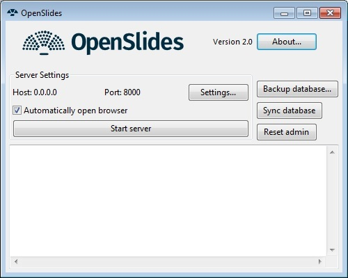
Zum Starten klicken Sie einfach auf den Knopf Start server und ihr Webbrowser öffnet sich.
Falls Sie Ihren Administrator-Zugang vergessen haben, können Sie mit Klick auf Reset admin einen neuen Admin-Nutzer erstellen, dessen Name und Passwort. admin ist.
In Settings können Sie optional den Webhost und Port einstellen; mehr dazu siehe ??. Mit Backup database und Sync database können Sie Sitzungen speichern bzw. laden; mehr dazu siehe ??.
2.3.2 Verwendung der Linux/MacOS-Version
Starten Sie den Server, indem Sie in der Kommandozeile eingeben:
$ openslides
Wenn Sie eine virtuelle Arbeitsumgebung (virtualenv) verwenden, müssen Sie diese zuvor aktivieren:
$ source .venv/bin/activate
Damit wird der Server gestartet und ihr Browser mit der richtigen URL geöffnet.
OpenSlides kann jederzeit im Fenster der Kommandozeile mit der Tastenkombination Strg+C beendet werden. Alle eingegebenen Daten bleiben in der Datenbank gespeichert.
Weitere Startoptionen können Sie mit folgender Eingabe sehen:
$ openslides –help
2.3.3 Öffnen des Browsers
Bei Start des Servers wird automatisch der Browser mit der richtigen URL geöffnet.
Falls dies wegen Ihrer Browsereinstellungen nicht gelingt, rufen Sie das OpenSlides-Webinterface auf, indem Sie in die Adresszeile die IP-Adresse des Servers eintragen. Sie hat oft die Form http://192.168.x.y/, wobei x und y für eine bestimmte Zahl mit ein bis drei Ziffern stehen. Am Computer, auf dem OpenSlides gestartet wurde, kann OpenSlides auch über http://localhost:8000 aufgerufen werden.
2.3.4 Erster Login
Der erste Login als Administrator ist mit dem Benutzernamen admin und dem Passwort admin möglich. Sie sollten das Passwort nach dem ersten Start ändern, siehe 4.1.2↓, um Unbefugten keinen Zugriff auf Ihre Daten zu gewähren.
Hinweis: OpenSlides benötigt Cookies um die Identität des Nutzers festzustellen, solange er eingeloggt ist. Beim Ausloggen wird das Cookie wieder gelöscht.
2.4 Arbeiten mit OpenSlides
Nach dem ersten Einloggen sieht OpenSlides so aus:\begin_inset Separator latexpar\end_inset
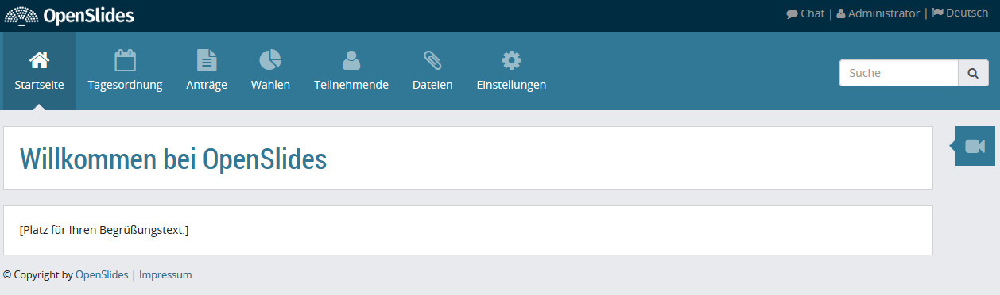
In der Kopfzeile kann man durch Klicken auf das Logo jederzeit auf die Startseite zurückkehren. In der Zeile rechts können Sie mit anderen Nutzern chatten, siehe ??, Ihr Profile bearbeiten und ihr Passwort ändern, siehe 4.1↓ und die Menüsprache von OpenSlides ändern.
In der Menüleiste können Sie über die Menüpunkte alle Inhalte in OpenSlides eingeben und verwalten.\begin_inset Separator latexpar\end_inset

- Im Menüpunkt Startseite können Sie die Teilnehmer willkommen heißen und kurz erklären, wie man OpenSlides nutzt.
- Im Menüpunkt Tagesordnung können Sie die Tagesordnung der Veranstaltung im Vorfeld oder live anlegen, entsprechende Folien vorbereiten und die Rednerliste verwalten. Mehr zur Tagesordnung siehe 4.4↓.
- Unter Anträge verwalten Sie die gestellten Anträge und die dazugehörigen Abstimmungen. Mehr dazu siehe 4.6↓.
- Der Punkt Wahlen verwaltet die Wahlämter mit den Kandidaten sowie die jeweiligen Wahlergebnisse. Mehr zur dazu siehe 4.7↓.
- Der Menüpunkt Teilnehmer/innen ermöglicht einen Zugriff auf die Personenprofile. Mehr zur dazu siehe 4.5↓.
- Unter dem Punkt Dateien können Sie eigene Dateien auf den Server laden und zum Download anbieten. PDF-Dateien können auch auf dem Projektor angezeigt werden. Mehr zur dazu siehe 4.8↓.
- Im Menüpunkt Einstellungen können die grundlegenden Einstellungen für die Veranstaltung vorgenommen werden. Mehr zur dazu siehe 4.10↓.
Wenn Sie auf das Symbol
klicken, wird neben dem Begrüßungstext der aktuell projizierte Inhalt angezeigt (Live-Vorschau):\begin_inset Separator latexpar\end_inset
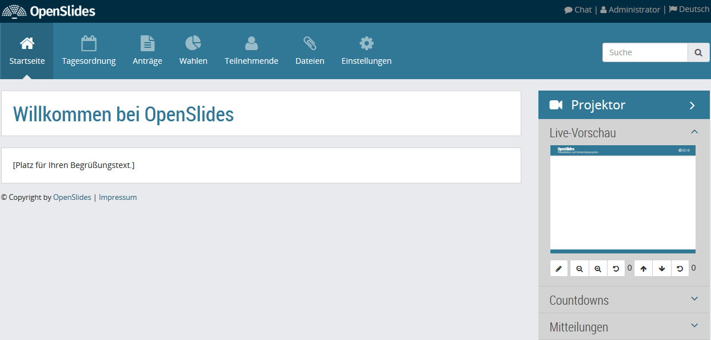
Damit haben Sie immer im Blick was die Teilnehmer gerade sehen und können während der Sitzung arbeiten. Das Projektorbild in voller Größe bekommen Sie in einem neuen Browsertab zu sehen, indem Sie auf die Live-Vorschau klicken. Sie ist auch unter der URL /projector/ zu finden. Loggen Sie sich an dem Computer, an dem der Projektor angeschlossen ist, in OpenSlides ein und rufen Sie den Link oder die URL auf. Legen Sie die Anzeige in einem eigenen Browserfenster auf den Projektor und projizieren Sie sie so auf die Leinwand. In vielen Browsern kann mit der Taste F11 in den Vollbildmodus gewechselt werden. Im Präsentationsmodus Single müssen Sie die Bildschirmanzeige auf Erweiterung/erweiterter Desktop stellen und das Browserfenster mit dem Projektorbild auf den Projektor schieben.
Das Projektorbild aktualisiert sich vollkommen automatisch. Sollte die Aktualisierung auf Grund eines Fehlers, zum Beispiel einer Unterbrechung der Verbindung zum Server, aussetzen, kann das Projektorbild an dem Computer, an dem der Projektor angeschlossen ist, regelmäßig mit der Taste F5 zurückgesetzt werden. Um dem Kopf des Projektorfensters nach einer Änderung in der Konfiguration zu aktualisieren, muss ebenfalls das Browserfenster zurückgesetzt werden.
3 Tutorium – Administration einer Versammlung
Dieses Tutorial ist auf dem Stand von OpenSlides 2.0.x.
In diesem Tutorial sehen Sie am Beispiel der Mitgliederversammlung eines Kleingartenvereins, wie Sie OpenSlides im Präsentationsmodus bedienen.
Zunächst lernen Sie, OpenSlides allgemein einzurichten und Folien auf dem Projektor zu zeigen. Anschließend können Sie die einzelnen Tutorials für Tagesordnung, Teilnehmerverwaltung, Anträge, Wahlen und Dateien durcharbeiten.
Alle Tutorials gehen von folgenden Rahmenbedingungen aus:
Der Verein „Schreberverein Nord e. V.“ hält am 2. März 2017 seine jährliche Mitgliederversammlung ab. Auf der Versammlung werden verschiedene Berichte gehalten und über eine Satzungsänderung abgestimmt. Außerdem finden Wahlen zum Vorstand und zum Beirat statt.
Auf den nächsten Seiten folgen die einzelnen Tutorials.
3.1 Einrichtung von OpenSlides
Zunächst müssen Sie OpenSlides auf dem Server installieren, den Server starten und einige Einstellungen für Ihre Veranstaltung vornehmen. Danach können Sie Ihre ersten Folien einrichten und auf dem Projektor zeigen.
3.1.1 Installation und Start des Servers
Installieren Sie OpenSlides wie in 2.1↑ beschrieben. Starten Sie anschließend den Server wie in 2.3↑ erläutert. Sie sehen jetzt die Login-Seite von OpenSlides in Ihrem Browser. Loggen Sie sich als Administrator ein, indem Sie als Benutzernamen admin und als Passwort admin eingeben und auf Anmelden klicken.\begin_inset Separator latexpar\end_inset
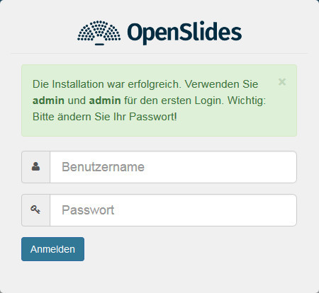
Anschließend sollten Sie sofort das Administrator-Passwort ändern. Klicken Sie dazu oben rechts in der Kopfzeile
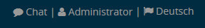
auf Administrator und dann auf Passwort ändern. Geben Sie in die entsprechenden Felder Ihr altes Passwort admin und anschließend Ihr neues Passwort ein. Wiederholen Sie das neue Passwort im dritten Formularfeld. Bestätigen Sie die Eingabe mit Speichern. Weitere Informationen zur Benutzerverwaltung finden Sie in 4.1↓.
3.1.2 Konfiguration des Systems
Geben Sie die Rahmendaten Ihrer Veranstaltung ins System ein. Wechseln Sie dazu zum Menüpunkt Einstellungen\SpecialChar menuseparatorAllgemein und geben Sie die Veranstaltungsdaten wie folgt ein:\begin_inset Separator latexpar\end_inset
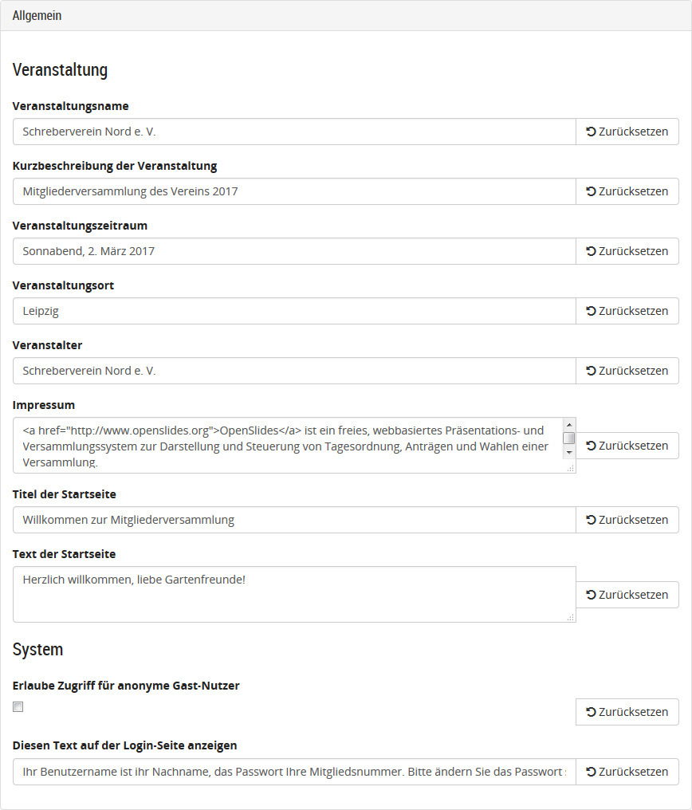
Das Impressum verweist voreingestellt auf OpenSlides. Es erscheint als Fußzeile in der Startseite. Der Text im Feld Diesen Text auf der Login-Seite anzeigen erscheint auf dem Login-Fenster, wenn sich die Teilnehmer einloggen:\begin_inset Separator latexpar\end_inset
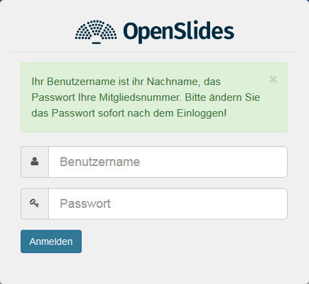
Alle Änderungen in den Einstellungen werden sofort gespeichert. Alle Einstellungen sind im Detail in 4.10↓ beschrieben.
3.1.3 Technische Einrichtung im Veranstaltungsraum
Im Präsentationsmodus Single schließen Sie den Projektor an Ihren Computer an und schieben ein zweites Browserfenster mit der Projektoransicht auf den Projektor. In den anderen Modi richten Sie ein Netzwerk ein, schließen Sie einen beliebigen Computer an den Projektor an und öffnen im Vollbildmodus die Seite mit der Projektoransicht. Die Projektoransicht bekommen Sie in einem neuen Browsertab zu sehen, indem Sie auf die Live-Vorschau klicken. Diese ist auch unter der URL /projector/ zu finden.
3.2 Tagesordnung verwalten
In diesem Teil lernen Sie, wie Sie Einträge in der Tagesordnung erstellen und verwalten.
3.2.1 Konfiguration der Tagesordnung
Gehen Sie zunächst im Menüpunkt Konfiguration\SpecialChar menuseparatorTagesordnung\SpecialChar menuseparatorAllgemein zum Unterpunkt Beginn der Veranstaltung. Hier können Sie den genauen Beginn der Veranstaltung einstellen. Zum Beispiel: 02.03.2017 10:00
Die weiteren Einstellungen der Tagesordnung sind in 4.4.7↓ beschrieben.
3.2.2 Eingabe der Tagesordnung
Die Tagesordnung enthält nach einer Neuinstallation noch keine Einträge. Legen Sie zunächst einige Einträge an. Klicken Sie dazu im Menüpunkt Tagesordnung oben rechts auf 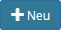
und geben Sie einen Eintrag wie folgt ein:
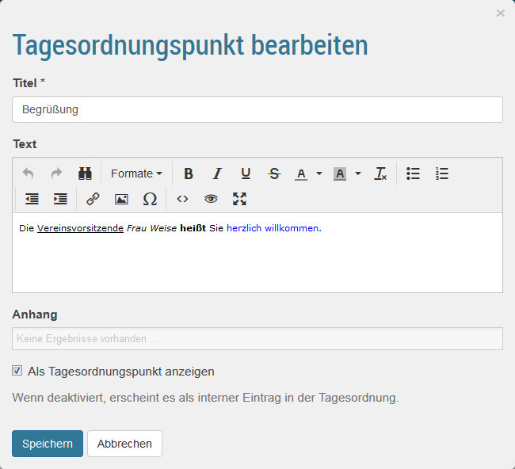
Wie sie sehen, können Sie den Text frei formatieren und dort auch Bilder einfügen. Im Feld Anhang können Sie aus allen in OpenSlides verfügbaren Dateien einen Anhang wählen. Mehr zu Dateien ist in 4.8↓ beschrieben.
Klicken Sie abschließend auf Speichern.
Klicken Sie abschließend auf Speichern.
Erweitern Sie nun die Tagesordnung um Einträge mit folgenden Titeln:
- Bericht des Vorstands
- Satzungsänderung
- Gartenfest
- Sonstiges
- Wahlen der Vereinsämter
Klicken Sie abschließend auf den Knopf  und die Tagesordnung wird nummeriert. Die Übersicht über die Einträge sieht nun so aus:\begin_inset Separator latexpar\end_inset
und die Tagesordnung wird nummeriert. Die Übersicht über die Einträge sieht nun so aus:\begin_inset Separator latexpar\end_inset
und die Tagesordnung wird nummeriert. Die Übersicht über die Einträge sieht nun so aus:\begin_inset Separator latexpar\end_inset

Sie können nun nachträglich die Reihenfolge der Einträge verändern und auch Tagesordnungspunkte zu Unterpunkten verschieben. Klicken Sie dazu oben auf den Knopf  und ziehen Sie dann mit gedrückter linker Maustaste den Punkt Sonstiges an die letzte Stelle. Den Punkt Gartenfest ziehen Sie unter Bericht des Vorstands und schieben ihn etwas nach rechts, bis er dort einrastet. Gehen sie durch Drücken des Knopfes 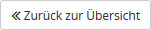
zurück zu Übersicht und drücken Sie
um die Nummerierung zu aktualisieren. Die Übersicht sieht nun so aus:
und ziehen Sie dann mit gedrückter linker Maustaste den Punkt Sonstiges an die letzte Stelle. Den Punkt Gartenfest ziehen Sie unter Bericht des Vorstands und schieben ihn etwas nach rechts, bis er dort einrastet. Gehen sie durch Drücken des Knopfes 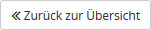
zurück zu Übersicht und drücken Sie
um die Nummerierung zu aktualisieren. Die Übersicht sieht nun so aus:
und ziehen Sie dann mit gedrückter linker Maustaste den Punkt Sonstiges an die letzte Stelle. Den Punkt Gartenfest ziehen Sie unter Bericht des Vorstands und schieben ihn etwas nach rechts, bis er dort einrastet. Gehen sie durch Drücken des Knopfes 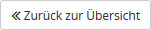
zurück zu Übersicht und drücken Sie
um die Nummerierung zu aktualisieren. Die Übersicht sieht nun so aus:

3.2.3 Einrichtung eigener Folien
Eigene Folien werden verwendet, um Dinge außerhalb der offiziellen Tagesordnung zu behandeln. Technisch sind sie jedoch dasselbe wie ein Tagesordnungspunkt.
Um z. B. den Teilnehmern mitzuteilen, dass es eine Kaffeepause gibt, erstellen Sie einen neuen Tagesordnungspunkt:
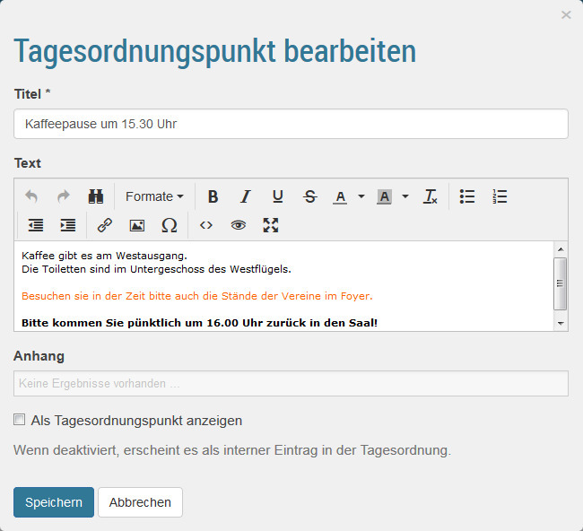
Dabei ist es wichtig, dass die Option Als Tagesordnungspunkt anzeigen nicht ausgewählt ist.
Eigene Folien werden in der Übersicht rosa unterlegt, um anzuzeigen, dass sie nicht Teil der offiziellen Tagesordnung sind.
3.2.4 Projektion der Tagesordnung
Die komplette Tagesordnung wird projiziert, wenn Sie auf das Symbol
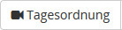 drücken. Durch Drücken von neben dem Symbol, können Sie wählen, ob alle Tagesordnungspunkte oder nur die Hauptpunkte angezeigt werden, also in unserem Fall ohne den Punkt Gartenfreunde. Eigene Folie werden in der Tagesordnung nicht projiziert.
neben dem Symbol, können Sie wählen, ob alle Tagesordnungspunkte oder nur die Hauptpunkte angezeigt werden, also in unserem Fall ohne den Punkt Gartenfreunde. Eigene Folie werden in der Tagesordnung nicht projiziert.
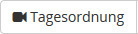 drücken. Durch Drücken von
neben dem Symbol, können Sie wählen, ob alle Tagesordnungspunkte oder nur die Hauptpunkte angezeigt werden, also in unserem Fall ohne den Punkt Gartenfreunde. Eigene Folie werden in der Tagesordnung nicht projiziert.
Einzelne Tagesordnungspunkte werden projiziert, indem Sie auf das Symbol 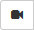
vor dem entsprechenden Eintrag klicken. So können Sie eigene Folien projizieren.
3.2.5 Ändern von Tagesordnungspunkten
Der Inhalt von Tagesordnungspunkten kann jederzeit geändert werden, insbesondere während der Veranstaltung. Dazu zeigen sie mit der Maus auf einen Tagesordnungspunkt und es erscheint ein Kontextmenü:\begin_inset Separator latexpar\end_inset
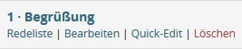
Ändern Sie zum Beispiel den Inhalt des Tagesordnungspunktes Bericht des Vorstandes, indem Sie dort auf Bearbeiten klicken und einen Text zum Tagesordnungspunkt eingeben.
Als Alternative für das Bearbeiten können Sie im Kontextmenü auf Quick-Edit klicken und so oft benötigte Dinge wie die Dauer ändern.\begin_inset Separator latexpar\end_inset
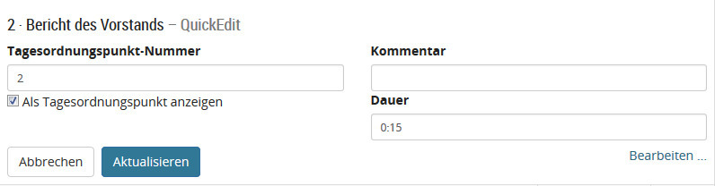
3.2.6 Redelisten
OpenSlides verfügt bei jedem Tagesordnungseintrag über eine Redelistenfunktion. Um eine Redeliste zu erstellen oder zu bearbeiten, klicken Sie im Kontextmenü des jeweiligen Tagesordnungspunkts auf Redeliste. Alternativ klicken Sie auf den Tagesordnungspunkt und dann auf 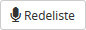
.
Setzen Sie sich selbst auf die Redeliste, indem sie auf 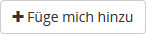
klicken. Wenn Sie Teilnehmer angelegt haben, wie es in 3.3.1↓ beschrieben ist, können Sie jeden Teilnehmer auf die Redeliste setzen.
Projizieren Sie die Redeliste nun durch Klicken auf 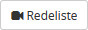
. Durch Drücken von 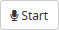
starten Sie Ihre Rede. Ihr Name wird nun im Projektor angezeigt. Um die Rede zu beenden, klicken Sie auf 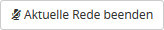
. Gibt es mehrere Redner, kann man mit Klicken auf  die aktuelle Rede beenden und die nächste beginnen.
die aktuelle Rede beenden und die nächste beginnen.
die aktuelle Rede beenden und die nächste beginnen.
In der Rubrik Letzte Redner/innen können sie sich die letzten Redner als Liste anzeigen lassen. Ein Teil dieser Liste wird auch projiziert, je nach den Einstellungen. Für Details dazu siehe 4.4.7↓.
Jede Redeliste ist erst einmal offen. Das heißt, dass sich jeder angemeldete Teilnehmer auf die Redeliste setzen kann. Um die Redeliste zu schließen, damit das nicht mehr möglich ist, klicken Sie auf den Knopf  . Der Knopf ändert sich nun zu
. Der Knopf ändert sich nun zu  und der neue Zustand wird im Projektor rot angezeigt:\begin_inset Separator latexpar\end_inset
und der neue Zustand wird im Projektor rot angezeigt:\begin_inset Separator latexpar\end_inset
. Der Knopf ändert sich nun zu
und der neue Zustand wird im Projektor rot angezeigt:\begin_inset Separator latexpar\end_inset
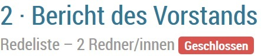
Wie man die Redeliste modifiziert und einen Countdown mit einer Rede verknüpft ist in 4.4.5↓ erklärt.
Weitere Details zur Tagesordnung finden Sie in 4.4↓.
3.3 Teilnehmer verwalten
In diesem Teil lernen Sie, wie Sie die Teilnehmer Ihrer Veranstaltungen im System erfassen. Im Präsentationsmodus brauchen Sie grundsätzlich nur diejenigen Teilnehmer erfassen, die das System verwalten, Anträge stellen oder unterstützen, auf Redelisten stehen oder bei Wahlen kandidieren.
3.3.1 Anlegen eines Teilnehmers
Sie können die Teilnehmer einzeln eintragen oder, wie in 4.5↓ beschrieben, importieren. Eingetragenen Personen, die das System verwalten sollen, müssen die entsprechenden Berechtigungen zugewiesen werden.
Zum Anlegen eines neuen Teilnehmers wechseln Sie zum Menü Teilnehmende und klicken Sie oben rechts auf 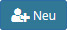
. Geben Sie als Beispiel diesen neuen Teilnehmer ein:\begin_inset Separator latexpar\end_inset
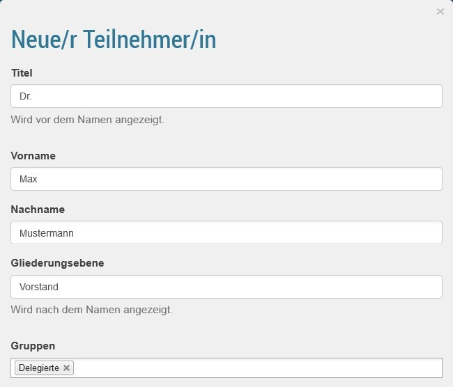
Wiederholen Sie diese Schritte und geben Sie folgende weitere Teilnehmer und Teilnehmerinnen ein: Peter Müller, Prof. Dr. Franziska Meyer, Luise Schmidt und Dr. Hans Schulze.
Die Angabe des Titels und der Gliederungsebene ist optional. Über die Gruppe wird festgelegt, welche Berechtigungen der Teilnehmer hat, also ob er z. B. wählen und Anträge stellen darf. Mehr zu Gruppen ist in 4.5.5↓ beschrieben.
3.3.2 Bearbeiten eines Teilnehmers
Im Menü Teilnehmende ist eine Liste mit allen Teilnehmern zu sehen:\begin_inset Separator latexpar\end_inset
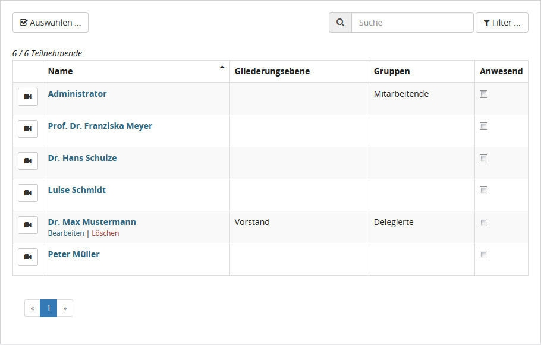
Klicken Sie zum Bearbeiten beispielsweise beim Teilnehmer „Max Mustermann“ unterhalb des Namens auf Bearbeiten und weisen ihm zusätzlich die Gruppe Mitarbeitende zu.
In der Teilnehmerliste kann jederzeit eingestellt werden, ob ein Teilnehmer anwesend ist. Dies ist für Wahlen und die Dokumentation der Veranstaltung wichtig.
3.3.3 Passwort eines Teilnehmers
Beim Anlegen eines Teilnehmers wird automatisch ein zufälliges Erst-Passwort gesetzt, falls man nicht selbst ein Passwort angibt. Sie können das Erst-Passwort der PDF-Datei entnehmen, die durch Klick auf das Symbol 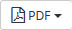
und dann auf Zugangsdatenliste angezeigt wird. Dieses PDF ist so ausgelegt, dass man es ausdrucken und so jedem Teilnehmer seine Zugangsdaten mitteilen kann.
Bitten Sie jeden, dem Sie sein Erst-Passwort aushändigen, dieses nach dem ersten Login zu ändern.
Um als Administrator das Passwort von zum Beispiel Max Mustermann neu zu setzen, klicken Sie in der Teilnehmerliste unterhalb des Namens auf Bearbeiten und tragen Sie im Feld Voreingestelltes Passwort ein neues Passwort ein. Anschließend klicken Sie auf Reset und dann erst auf Speichern.
Detaillierte, weitere Informationen zur Teilnehmerverwaltung finden Sie in 4.5↓.
3.4 Countdowns und Mitteilungen
Unterhalb der Live-Vorschau gibt es die Rubriken Countdown und Mitteilungen. Um z. B. mitzuteilen, wo es das Mittagessen gibt, klicken Sie auf 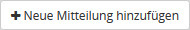
und rechts oben in der Mitteilung auf
. Geben Sie nun den Text „Das Mittagessen gibt es in 5 Minuten im Foyer, 1. Stock, Aufgang B.“ ein und klicken anschließend auf 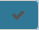
. Klicken Sie nun auf
, wird die Mitteilung so angezeigt:\begin_inset Separator latexpar\end_inset
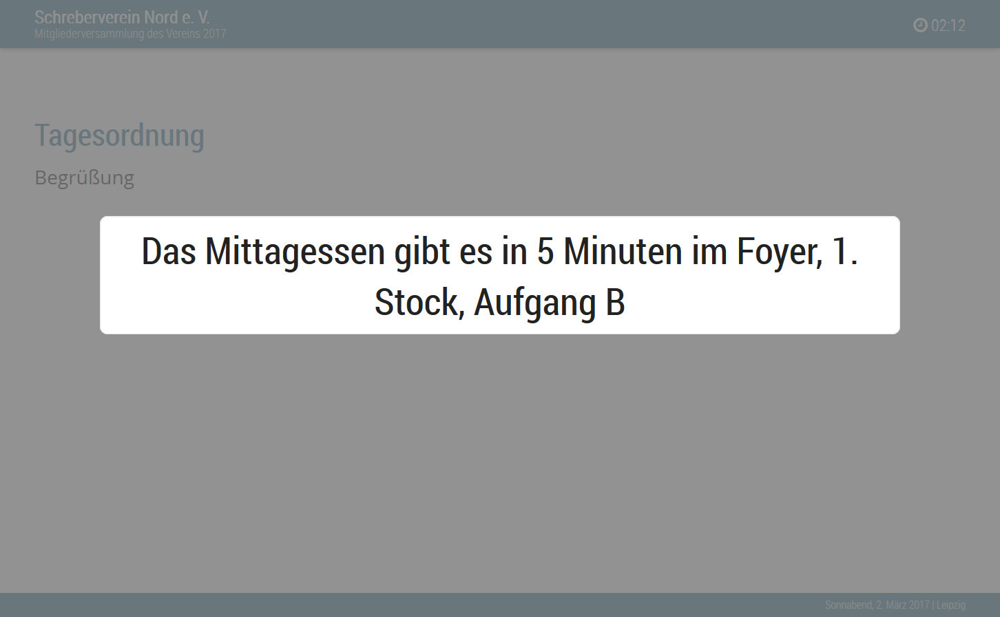
Um nun die 5 min als Countdown laufen zu lassen, klicken Sie auf
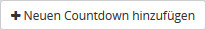 und dann auf . Geben Sie als Beschreibung „Mittagessen startet in“ und als Startzeit „5:00“ ein und klicken anschließend auf das Symbol . Klicken Sie nun auf um den Countdown anzuzeigen. Mit dem Klick auf der aktuellen Mitteilung wird diese wieder von Projektor entfernt. Klicken Sie auf 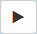 um den Countdown zu starten.\begin_inset Separator latexpar\end_inset
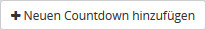 und dann auf . Geben Sie als Beschreibung „Mittagessen startet in“ und als Startzeit „5:00“ ein und klicken anschließend auf das Symbol . Klicken Sie nun auf um den Countdown anzuzeigen. Mit dem Klick auf der aktuellen Mitteilung wird diese wieder von Projektor entfernt. Klicken Sie auf 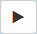 um den Countdown zu starten.\begin_inset Separator latexpar\end_inset
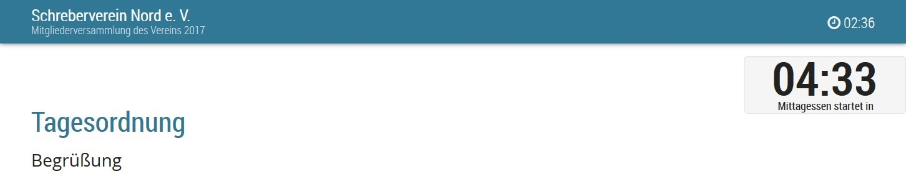
Die Zeit des Countdowns wird unter 30 s orange eingefärbt. Nach dem Ablauf wird die Zeit rot eingefärbt und läuft negativ.
Besonders sinnvoll sind Countdowns für Reden. Um für jede Rede einen Countdown mitlaufen zu lassen, wechseln Sie in das Menü Einstellungen\SpecialChar menuseparatorTagesordnung und wählen dort die Option Countdown mit der Redeliste verkoppeln aus. Nun werden alle Countdowns automatisch gestartet, wenn eine Rede begonnen wird. Welchen Countdown Sie projizieren oder ob sie ihn überhaupt einen projizieren, haben Sie in der Hand.
3.5 Anträge verwalten und behandeln
In diesem Teil lernen Sie, Anträge in das System einzugeben und zu verwalten sowie, wie Sie während der Veranstaltung einen Antrag behandeln und eine Abstimmung durchführen.
3.5.1 Eingabe eines bereits vorliegenden Antrags
Vor Beginn der Veranstaltung liegen bereits Anträge an die Versammlung vor, welche ins System gebracht werden sollen. Wechseln Sie zum Menü Anträge und klicken auf
.
Geben Sie als Beispiel einen Antrag, mit dem die Vereinssatzung so geändert werden soll, dass der Beirat mehr Mitglieder hat, wie folgt ein:

Wie sie sehen, gibt es im Textfeld schon eine Einleitung „Die Versammlung möge beschließen,“. Diese können Sie ändern oder abschalten, siehe dazu 4.6.9↓. Dass Sie den Antrag als Tagesordnungspunkt anzeigen, ist optional.
Erstellen Sie auf gleiche Weise eine weiteren Antrag mit dem Titel „Änderung der Geschäftsordnung“.
Die Antragsseite sieht nun wie folgt aus:\begin_inset Separator latexpar\end_inset
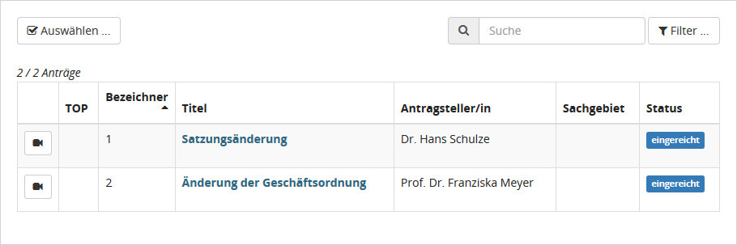
Anträge können auch während der Veranstaltung angelegt werden.
3.5.2 Behandlung eines Antrags
Angenommen die Versammlungsleitung ruft den Antrag zur Satzungsänderung auf. Klicken Sie zunächst in der Antragsübersicht auf
vor dem Antrag. Dieser wird nun projiziert:\begin_inset Separator latexpar\end_inset
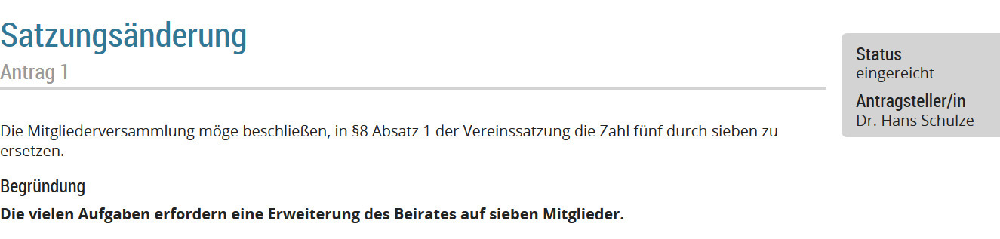
Um schnell zur Antragsverwaltung zu wechseln, können Sie auf den Titel des Antrags klicken.
Nach Abschluss der Diskussion ruft der Vorsitzende zur Abstimmung auf. Klicken Sie im rechten Kasten auf Neue Abstimmung und tragen Sie das Abstimmungsergebnis wie folgt in das Formular ein:
Der Vorsitzende stellt fest, dass der Antrag angenommen ist. Klicken Sie deshalb auf der im rechten unteren Kasten unter „Antrag verwalten“ auf Annehmen.
Das Projektorbild sieht nun wie folgt aus:
3.6 Wahlen durchführen
In diesem Teil lernen Sie, wie Sie Wahlen auf Ihrer Versammlung mit OpenSlides begleiten.
3.6.1 Anlegen von Wahlen
Vor Veranstaltungsbeginn sind die anstehenden Wahlen vorzubereiten. Gehen Sie dazu ins Menü Wahlen. Legen Sie nun eine neue Wahl an indem sie oben auf
klicken. Geben Sie nun eine Wahl wie folgt ein:\begin_inset Separator latexpar\end_inset
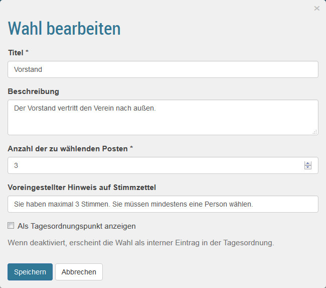
Geben Sie auf die gleiche Weise eine weitere Wahl ein:
Name: Beirat
Beschreibung: Der Beirat unterstützt den Vorstand.
Anzahl der zur Wahl stehenden Posten: 7
Die Wahlübersicht sieht nun so aus:\begin_inset Separator latexpar\end_inset

3.6.2 Durchführung einer Wahl
Klicken Sie in der Wahlübersicht auf
vor Vorstand. Die Wahl wird nun projiziert. Nun klicken Sie auf den Namen der Wahl Vorstand.
Setzen Sie sich mit
auf die Kandidatenliste. Es können alle bei OpenSlides angelegten Teilnehmer hinzugefügt werden. Wählen Sie nun aus der Liste 4 weitere Kandidaten aus.
Wir gehen nun davon aus, dass die Kandidatenliste feststeht. Damit sich die Kandidaten vorstellen können, klicken Sie oben auf
. Die Redeliste ist technisch identisch zu der Redeliste eines Tagesordnungspunkts, die in 3.2.6↑ behandelt wurde. Wie Sie sehen, sind bereits alle Kandidaten auf der Redeliste. Sie können noch weitere Redner hinzufügen.
Um die Wahl zu beginnen, klicken Sie unten auf  . Dadurch hat sich die Phase der Wahl automatisch auf Im Wahlvorgang geändert. Das Projektorbild sieht nun so aus:\begin_inset Separator latexpar\end_inset
. Dadurch hat sich die Phase der Wahl automatisch auf Im Wahlvorgang geändert. Das Projektorbild sieht nun so aus:\begin_inset Separator latexpar\end_inset
. Dadurch hat sich die Phase der Wahl automatisch auf Im Wahlvorgang geändert. Das Projektorbild sieht nun so aus:\begin_inset Separator latexpar\end_inset
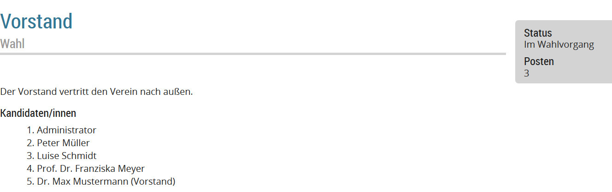
Da die Wahl von Personen eine geheime Wahl ist, müssen Stimmzettel erstellt werden. Klicken Sie dafür auf  . Der Stimmzettel sieht so aus:\begin_inset Separator latexpar\end_inset
. Der Stimmzettel sieht so aus:\begin_inset Separator latexpar\end_inset
. Der Stimmzettel sieht so aus:\begin_inset Separator latexpar\end_inset
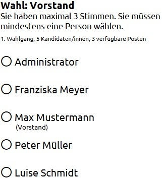
und kann ausgedruckt und verteilt werden.
Wir nehmen nun an, dass die Wahl ausgezählt wurde und die Ergebnisse vorliegen. Tragen Sie daher nun die Ergebnisse dieses 1. Wahlgangs ein, indem Sie auf 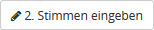
klicken. In die Eingabemaske tragen Sie als Beispiel bei Administrator 23, bei Frau Meyer 38, bei Herrn Mustermann 17, bei Herrn Müller 20, bei Frau Schmidt 22, bei Gültige Stimmen 109, bei Ungültige Stimmen 1 und bei Abgegebene Stimmen 110 ein.
Wir nehmen an, dass 50 Personen an der Wahl teilgenommen haben und dass die Satzung vorsieht, dass die Personen gewählt sind, die mindestens die Hälfte der Stimmen bekommen hat, wie Personen an der Wahl teilgenommen haben. Es wurde also im 1. Wahlgang nur Frau Meyer gewählt. Klicken Sie daher nur bei ihr auf das Symbol  vor ihrem Namen. Um die Wahl zu veröffentlichen, klicken Sie auf 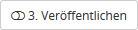
. Im Projektor wird erst einmal nur die Kandidatenliste angezeigt, in der Frau Meyer als Gewählte mit einem Stern markiert ist:\begin_inset Separator latexpar\end_inset
vor ihrem Namen. Um die Wahl zu veröffentlichen, klicken Sie auf 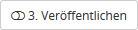
. Im Projektor wird erst einmal nur die Kandidatenliste angezeigt, in der Frau Meyer als Gewählte mit einem Stern markiert ist:\begin_inset Separator latexpar\end_inset
vor ihrem Namen. Um die Wahl zu veröffentlichen, klicken Sie auf 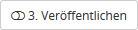
. Im Projektor wird erst einmal nur die Kandidatenliste angezeigt, in der Frau Meyer als Gewählte mit einem Stern markiert ist:\begin_inset Separator latexpar\end_inset
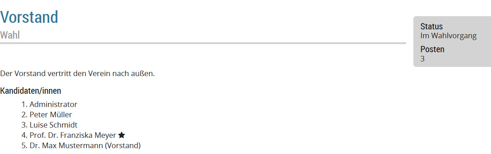
Sie können nun entscheiden, ob auch die Stimmenanzahl veröffentlicht wird. Da das gewünscht ist, klicken Sie nun auf 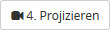
. Es wird nun dies projiziert:\begin_inset Separator latexpar\end_inset
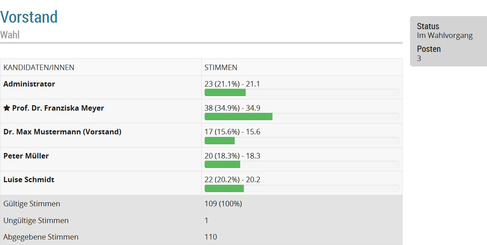
Als Erklärung können Sie nun vielleicht eine Mitteilung mit dem Inhalt „Es haben 50 Personen teilgenommen, zur Wahl notwendig waren daher 25 Stimmen.“ anzeigen, wie Sie es in 3.4↑ gelernt haben.
Da der Vorstand aus 3 Personen bestehen muss, ist ein zweiter Wahlgang notwendig. Klicken Sie daher auf
und
. Geben Sie fiktive Ergebnisse ein und markieren Herrn Mustermann und Administrator als gewählt. Zuletzt klicken Sie auf
und
und ändern oben die Phase auf Abgeschlossen. Wenn Sie oben auf 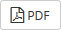
klicken, erhalten Sie ein PDF mit dem Wahlergebnis, das Sie für die Nachbereitung der Veranstaltung verwenden können.
und
. Geben Sie fiktive Ergebnisse ein und markieren Herrn Mustermann und Administrator als gewählt. Zuletzt klicken Sie auf
und
und ändern oben die Phase auf Abgeschlossen. Wenn Sie oben auf 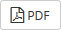
klicken, erhalten Sie ein PDF mit dem Wahlergebnis, das Sie für die Nachbereitung der Veranstaltung verwenden können.
Auf die gleiche Weise können Sie nun auch die die Wahl des Beirats durchführen. Sie werden feststellen, dass als Wahlmethode automatisch eine Ja-Nein-Enthaltungs-Wahl bezüglich eines jeden Kandidaten ausgewählt wird, wenn es weniger oder gleich viele Kandidaten wie Plätze gibt:\begin_inset Separator latexpar\end_inset
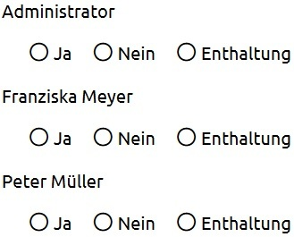
Mehr zu Wahlen und deren Einstellungen erfahren Sie im Detail in 4.7.3↓.
3.7 Dateien hochladen und verwalten
Wie man Dateien, zum Beispiel Bilder, bei OpenSlides hochlädt und projiziert, ist in 4.8↓ erklärt.
3.8 Nach einer Veranstaltung
Am Ende der Versammlung können Sie sich für das Protokoll einige Dokumente direkt aus OpenSlides holen. Klicken Sie jeweils im Menü Tagesordnung, Anträge, Wahlen und Teilnehmende rechts oben auf
. Mehr zur Nachbereitung ist in 4.9↓ beschrieben.
Alle weiteren Funktionen von OpenSlides und Details zu den im Tutorium behandelten Funktionen, finden Sie in 4↓. Wie Sie Anpassungen an OpenSlides vornehmen, erfahren Sie in 5↓.
Viel Spaß weiterhin mit OpenSlides!
4 Einzelne Funktionen
Im Folgenden werden die einzelnen Funktionen von OpenSlides erläutert. Die Funktionen sind mit wenigen Ausnahmen alle über die Menüpunkte des Webinterfaces zu erreichen.
Die meisten der hier beschriebenen Funktionen sind nur für Administratoren und Mitglieder der Teilnehmergruppe Mitarbeitende verfügbar. Die Funktionen für normale Mitglieder sind im Tutorium Teilnehmer beschrieben, siehe ??.
4.1 An- und Abmelden – Benutzername und Passwort ändern
4.1.1 An- und Abmelden
Beim ersten Aufruf von OpenSlides erscheint die Login-Seite.\begin_inset Separator latexpar\end_inset
Der erste Benutzername des Administrators ist admin. Er hat das erste Passwort admin. Über die Teilnehmerverwaltung [B] [B] Mehr zur Teilnehmerverwaltung siehe 4.5↓. neu angelegte Teilnehmer haben einen aus dem Vor- und Nachnamen zusammengesetzten Benutzernamen, wobei Groß- und Kleinschreibung zu beachten ist und zwischen den Namen ein Leerzeichen liegt. Beispiel: Ein mit dem Vornamen Max und dem Nachnamen Mustermann angelegter Teilnehmer hat den Benutzernamen
Max Mustermann
Das voreingestellte Passwort kann über die Teilnehmerverwaltung eingesehen werden. Zum Einloggen geben Sie Ihren Benutzernamen und Ihr Passwort ein und klicken auf Anmelden.
Um die Nutzer zu informieren wie man sich einloggt, kann man einen Text im Menü Einstellungen\SpecialChar menuseparatorAllgemein\SpecialChar menuseparatorSystem im Feld Diesen Text auf der Login-Seite anzeigen eingeben. Dieser erscheint auf dem Login-Fenster, wenn sich die Teilnehmer einloggen:\begin_inset Separator latexpar\end_inset
Hinweis: OpenSlides benötigt Cookies um die Identität des Nutzers festzustellen, solange er eingeloggt ist. Beim Ausloggen wird das Cookie wieder gelöscht.
4.1.2 Eigenen Benutzernamen oder Passwort ändern
Klickt man in der Kopfzeile von OpenSlides rechts auf den Benutzernamen, kann man das Profil bearbeiten oder das Passwort ändern.
Die eigenen Benutzereinstellungen wie Benutzername und Passwort können über den Button oben rechts geändert werden. Klicken Sie auf den Button, wählen Sie im oberen rechten Menü aus, ob Sie Ihre persönlichen Einstellungen oder Ihr Passwort ändern möchten, und ändern Sie die jeweiligen Einstellungen. Klicken Sie abschließend auf Speichern.
4.1.3 Fremde Benutzereinstellungen (insbesondere Benutzername oder Passwort) ändern
Beim Anlegen eines Teilnehmers wird automatisch ein zufälliges Erst-Passwort gesetzt. Sie können das voreingestellte Passwort aus einer PDF-Datei ablesen, die Sie durch Klick auf den Link „Zugangsdatenliste“ im rechten oberen Menü erreichen.
Benutzer mit den entsprechenden Rechten wie Mitarbeiter können alle Benutzer über den Menüpunkt „Teilnehmer/innen“ verwalten und dort auch den Benutzernamen ändern und das Passwort auf ein bestimmtes voreingestelltes Passwort zurücksetzen.
Klicken Sie beim jeweiligen Teilnehmer auf das Bearbeiten-Symbol
und tragen Sie unter „Voreingestelltes Passwort“ ein neues, selbstgewähltes Passwort ein. Anschließend klicken Sie auf Übernehmen. In einem zweiten Schritt müssen Sie auf den Link „Auf Erst-Passwort zurücksetzen“ klicken, um das im System gespeicherte Passwort mit Ihrem neu eingegebenen zu ersetzen. Bestätigen Sie den oben auf der Seite erscheinenden Dialog mit Ja.
4.2 Projektorsteuerung
Dieses Handbuch ist noch nicht fertiggestellt. Wenn Sie Interesse haben, uns zu unterstützen, schreiben Sie uns einfach eine E-Mail:
4.3 Countdown und Mitteilungen
Unterhalb der Live-Vorschau gibt es die Rubriken Countdown und Mitteilungen.
4.3.1 Countdowns
Um einen Countdown laufen zu lassen, klicken Sie auf
und dann auf
. Geben Sie als Beschreibung einen kurzen Text ein, der später unter der Zeit erscheint. Als Startzeit geben Sie eine Zeit im Format mm:ss (Minuten:Sekunden, z. B: „5:00“) ein und klicken anschließend auf
. Mit Klick auf
wird der Countdown angezeigt.\begin_inset Separator latexpar\end_inset
Es ist möglich mehrere Countdowns gleichzeitig zu projizieren. Die Voreinstellung von 60 s für die Länge neuer Countdowns kann im Menü Einstellungen\SpecialChar menuseparatorProjektor geändert werden, siehe 4.10.2↓. Die Zeit der Countdowns wird unter 30 s orange eingefärbt. Diese Zeit kann im Menü Einstellungen\SpecialChar menuseparatorTagesordnung geändert werden, siehe 4.4.7↓. Nach dem Ablauf wird die Zeit rot eingefärbt und läuft negativ.
Um für jede Rede einen Countdown mitlaufen zu lassen, muss im Menü Einstellungen\SpecialChar menuseparatorTagesordnung die Option Countdown mit der Redeliste verkoppeln ausgewählt sein. Dadurch werden alle existierenden Countdowns automatisch gestartet, wenn eine Rede begonnen wird. Ob, welcher und wie viele Countdowns projiziert werden, kann durch das Klicken auf
festgelegt werden.
4.3.2 Mitteilungen
Um etwas mitzuteilen, klicken Sie auf
und rechts oben in der Mitteilung auf
. Geben Sie nun einen Text ein und klicken anschließend auf das Symbol
. Klicken Sie auf
, wird die Mitteilung projiziert. Es kann immer nur eine Mitteilung projiziert werden.\begin_inset Separator latexpar\end_inset
4.4 Tagesordnung
Die Verwaltung der Tagesordnung ist im Menü Tagesordnung angelegt. Dort wird die Tagesordnung in einer editierbaren Liste angezeigt.
4.4.1 Tagesordnungspunkte erstellen und bearbeiten
Um einen neuen Tagesordnungspunkt zu erstellen, klickt man oben rechts auf
. Der Text der Tagesordnung kann frei formatiert werden und er kann auch Bilder und Weblinks enthalten. Im Feld Anhang können Sie aus allen in OpenSlides verfügbaren Dateien einen Anhang wählen. Mehr zu Dateien siehe 4.8↓. Die Anhänge werden nicht mit projiziert, sie dienen nur für zusätzliche Informationen.
Der Inhalt von Tagesordnungspunkten kann jederzeit geändert werden, insbesondere während der Veranstaltung. Dazu zeigt man mit der Maus auf einen Tagesordnungspunkt und es erscheint ein Kontextmenü:\begin_inset Separator latexpar\end_inset
Klickt man dort auf Bearbeiten, kann man den Tagesordnungspunkt bearbeiten. Als Alternative für das Bearbeiten kann man im Kontextmenü auf Quick-Edit klicken und so oft benötigte Dinge wie die Dauer ändern:\begin_inset Separator latexpar\end_inset
Kommentare dienen nur als Hinweis und werden nicht projiziert. Sie sind nur für die Versammlungsleitung sichtbar.
4.4.2 Einrichtung eigener Folien
Eigene Folien werden verwendet, um Dinge außerhalb der offiziellen Tagesordnung zu behandeln. Technisch sind sie jedoch dasselbe wie ein Tagesordnungspunkt. Das Erstellen einer eigenen Folie funktioniert daher genauso wie das Erstellen eines Tagesordnungspunkts, nur dass es wichtig ist, dass die Option Als Tagesordnungspunkt anzeigen nicht ausgewählt ist.
Eigene Folien werden in der Übersicht rosa unterlegt, um anzuzeigen, dass sie nicht Teil der offiziellen Tagesordnung sind.
4.4.3 Tagesordnungspunkte sortieren und nummerieren
Die Tagesordnungspunkte werden entsprechend der aktuellen Sortierung mit dem Knopf
nummeriert. Die Art der Nummerierung kann über die Einstellungen festgelegt werden, siehe 4.4.7↓. So sieht eine Tagesordnung aus, bei der römische Nummerierung und der Präfix „TOP“ gewählt wurde:\begin_inset Separator latexpar\end_inset
nummeriert. Die Art der Nummerierung kann über die Einstellungen festgelegt werden, siehe 4.4.7↓. So sieht eine Tagesordnung aus, bei der römische Nummerierung und der Präfix „TOP“ gewählt wurde:\begin_inset Separator latexpar\end_inset
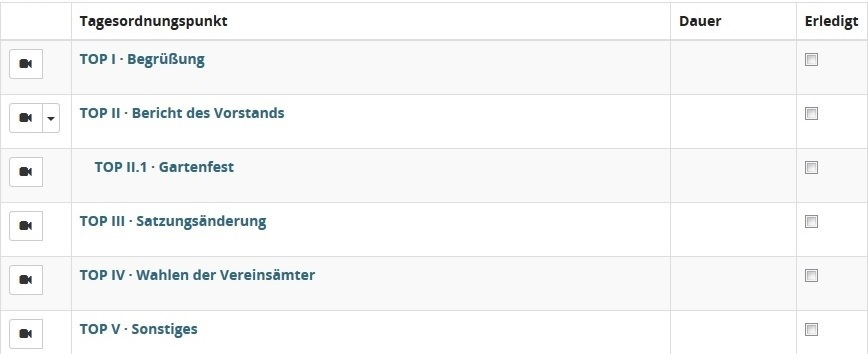
Die Reihenfolge der Tagesordnungspunkte kann jederzeit verändert werden und man kann Tagesordnungspunkte zu Unterpunkten machen. Dazu klickt man oben auf den Knopf
und zieht mit gedrückter linker Maustaste einen Punkt an die gewünschte Stelle. Um aus einem Punkt einen Unterpunkt zu machen, schiebt man ihn etwas nach rechts, bis er einrastet. Um einen Unterpunkt zu einem Hauptpunkt zu machen, schiebt man ihn nach links. Nach der Änderung der Reihenfolge muss man
drücken, um die Nummerierung zu aktualisieren.
und zieht mit gedrückter linker Maustaste einen Punkt an die gewünschte Stelle. Um aus einem Punkt einen Unterpunkt zu machen, schiebt man ihn etwas nach rechts, bis er einrastet. Um einen Unterpunkt zu einem Hauptpunkt zu machen, schiebt man ihn nach links. Nach der Änderung der Reihenfolge muss man
drücken, um die Nummerierung zu aktualisieren.
4.4.4 Projektion der Tagesordnung
Die komplette Tagesordnung wird projiziert, wenn man auf das Symbol
klickt. Durch Drücken von
neben dem Symbol, kann man wählen, ob alle Tagesordnungspunkte oder nur die Hauptpunkte angezeigt werden. Eigene Folie werden in der Tagesordnung nicht projiziert.
klickt. Durch Drücken von
neben dem Symbol, kann man wählen, ob alle Tagesordnungspunkte oder nur die Hauptpunkte angezeigt werden. Eigene Folie werden in der Tagesordnung nicht projiziert.
Einzelne Tagesordnungspunkte werden projiziert, indem man auf das Symbol
vor dem entsprechenden Eintrag klickt. So können eigene Folien projiziert werden.
4.4.5 Redeliste verwalten
OpenSlides verfügt bei jedem Tagesordnungseintrag über eine Redelistenfunktion. Um eine Redeliste zu erstellen oder zu bearbeiten, klickt man im Kontextmenü des jeweiligen Tagesordnungspunkts auf Redeliste. Alternativ klickt man auf den Tagesordnungspunkt und dann auf
.
Mit einem Klick auf
kann man sich selbst auf die Redeliste setzen. Administratoren können jeden auf die Redeliste setzen und durch Klicken von
jeden von der Liste nehmen.
Die Redeliste wird durch Klicken auf
projiziert. Durch Drücken von
wird eine Rede gestartet. Der Name des Redners wird nun im Projektor angezeigt.
Um für jede Rede einen Countdown mitlaufen zu lassen, muss in den Einstellungen, siehe 4.4.7↓, die Option Countdown mit der Redeliste verkoppeln ausgewählt sein. Dadurch werden alle existierenden Countdowns automatisch gestartet, wenn eine Rede begonnen wird. Ob, welcher und wie viele Countdowns projiziert werden, kann durch das Klicken auf
vor den Countdowns festgelegt werden. Mehr zu Countdowns ist in 4.3.1↑ beschrieben.
Um die Rede zu beenden, klickt man auf
oder 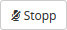
. Gibt es mehrere Redner, kann man mit Klicken auf
die aktuelle Rede beenden und die nächste beginnen.
die aktuelle Rede beenden und die nächste beginnen.
In der Rubrik Letzte Redner/innen kann man sich die letzten Redner als Liste anzeigen lassen. Die letzten x Redner dieser Liste werden auch projiziert. Die Anzahl der projizierten Redner kann eingestellt werden, siehe 4.4.7↓.
Jede Redeliste ist erst einmal offen. Das heißt, dass sich jeder angemeldete Teilnehmer auf die Redeliste setzen kann. Um die Redeliste zu schließen, damit das nicht mehr möglich ist, klickt man den Knopf
. Der Knopf ändert sich nun zu
und der neue Zustand wird im Projektor rot angezeigt.
. Der Knopf ändert sich nun zu
und der neue Zustand wird im Projektor rot angezeigt.
Die Reihenfolge der Redeliste kann jederzeit geändert werden. Dazu klickt man auf das Symbol
vor dem Rednernamen, hält die Maustaste gedrückt und verschiebt den Redner an die gewünschte Stelle.
Am Ende der Veranstaltung kann man sämtliche Redelisten mit den jeweiligen Redezeiten als CSV-Datei exportieren. Dazu benötigt man das Plugin CSV Export Plugin for OpenSlides, das in 4.9.1↓ beschrieben ist.
4.4.6 Tagesordnung drucken
Auf der Übersichtsseite der Tagesordnung kann man durch Klicken auf
die gesamte Tagesordnung mit allen Unterpunkten (ohne eigene Folien) als PDF-Datei abrufen.
4.4.7 Einstellungen
Im Menüpunkt Einstellungen\SpecialChar menuseparatorTagesordnung kann das Verhalten der Tagesordnung konfiguriert werden.
Rubrik Allgemein
Im Feld Präfix für Nummerierung von Tagesordnungspunkten kann man einen Präfix angeben, der vor der Nummer des Tagesordnungspunkts angezeigt wird; z. B. „TOP“.
Im Feld Nummerierungssystem für Tagesordnungspunkte kann die Nummerierung der Tagesordnungspunkte zwischen arabischen und römischen Nummern umgeschaltet werden.
Im Feld Beginn der Veranstaltung wird der genaue Beginn der Veranstaltung angegeben. Das Eingabeformat ist dabei TT.MM.JJJJ HH:MM; also z. B. „02.03.2017 10:00“.
Rubrik Redeliste
Im Feld Anzahl der dargestellten letzten Redner/innen auf dem Projektor kann die Anzahl der letzten Redner eingestellt werden, die als Liste über der Liste der folgenden Redner angezeigt wird. Im Projektor ist diese Liste in grauer Schrift:
Im Feld Countdown in den letzten x Sekunden der Redezeit orange darstellen kann man einstellen, die wie viele der letzten Sekunden eines Countdowns in orange dargestellt werden.
Mit der Option Countdown mit der Redeliste verkoppeln werden bei Beginn jeder Rede alle existierenden Countdowns gestartet. Mehr zu Countdowns siehe 4.3.1↑.
4.5 Teilnehmer
Die Teilnehmerverwaltung ist im Menü Teilnehmende angelegt. Dort werden alle angelegten Teilnehmer in einer editierbaren Liste angezeigt.
4.5.1 Manuelles Anlegen
Zum manuellen Anlegen eines neuen Teilnehmers klickt man oben rechts auf
. In der erscheinenden Eingabemaske können folgende Angaben gemacht werden:
Benutzername Benutzername des Teilnehmers, mit dem er sich in OpenSlides einloggt.
Titel optionaler Titel des Teilnehmers. Dieser wird z. B. in Redelisten vor dem Namen angezeigt
Vorname Vorname
Nachname Nachname
Gliederungsebene optionale Angabe der Mitgliedschaft in einer Organisation. Bei Veranstaltungen von Vereinen kann man so z. B. für Vorstandsmitglieder „Vorstand“ eintragen. Die Gliederungsebene wird z. B. in Redelisten nach dem Namen angezeigt
Gruppen Gruppe(n), der der Teilnehmer in OpenSlides angehört. Man kann nacheinander mehrere Gruppen auswählen. Mehr dazu siehe 4.5.5↓.
Voreingestelltes Passwort Das Erst-Passwort für den Teilnehmer. Wird keines angegeben, wird automatisch eins generiert, siehe 4.5.4↓.
Kommentar optionaler Kommentar zum Teilnehmer
Über mich optionale persönliche Informationen zum Teilnehmer
Ist anwesend Anwesenheitsstatus, der später auch direkt in der Teilnehmerliste gesetzt werden kann.
Ist aktiv Option, die bestimmt, ob der Teilnehmer als aktiv behandelt werden soll. Man kann ihn so deaktivieren, ohne ihn zu löschen.
In der Praxis kann es sein, dass man oft nicht mehr angibt als den Namen. Es ist daher auch möglich Teilnehmer anzulegen, indem man oben rechts auf 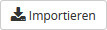
klickt. Dort gibt man in das Textfeld nur den Vor- und Nachnamen ein. Mit weiteren Zeilen im Textfeld können auch gleich mehrere Teilnehmer angelegt werden. Abschließend klickt man auf 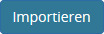
. In der Teilnehmerliste, siehe 4.5.3↓, kann man nachträglich weitere Informationen hinzufügen.
4.5.2 Automatisiertes Anlegen
Teilnehmer können automatisiert aus einer Liste importiert werden. Dazu muss eine CSV-Datei erstellt werden. Dies ist eine Textdatei (die üblicherweise die Endung .csv oder seltener .txt hat). Ihre erste Zeile muss aus dieser Zeile bestehen:
title,first_name,last_name,structure_level,groups,comment,is_active
Es folgen dann je eine Zeile für jeden Teilnehmer. Ein Eintrag für einen Teilnehmer wäre z. B.:
Prof. Dr.,Max,Käßmann,,3,,1
Jedes Komma trennt die Eigenschaften voneinander. Gibt es eine Eigenschaft nicht, folgen die Kommas direkt aufeinander. Es muss jedoch mindestens der Vor- und Nachname angegeben werden. Bei der Anwesenheit bedeutet ’1’, dass die Person anwesend ist oder sein wird, ansonsten verwendet man ’0’ oder nichts.
Bei der Gruppe wird nicht deren Name, sondern deren Nummer angegeben. Voreingestellt in OpenSlides ist Gruppe 3 für Delegierte und Gruppe 4 für Mitarbeitende; Details dazu siehe 4.5.5↓. Soll ein Teilnehmer in mehreren Gruppen sein, werden diese durch Komma getrennt in Anführungszeichen gesetzt also z. B.:
Bei der Gruppe wird nicht deren Name, sondern deren Nummer angegeben. Voreingestellt in OpenSlides ist Gruppe 3 für Delegierte und Gruppe 4 für Mitarbeitende; Details dazu siehe 4.5.5↓. Soll ein Teilnehmer in mehreren Gruppen sein, werden diese durch Komma getrennt in Anführungszeichen gesetzt also z. B.:
,Žusan,Oltrán,Vorstand,"3,4",kommt 15 Minuten später,
Achtung: Die Gruppen 1 und 2 werden von OpenSlides automatisch vergeben. Man darf diese Gruppennummern in der der CSV-Datei nicht vergeben, da der Teilnehmer sonst nicht angelegt wird.
Zum Importieren klickt man oben rechts auf
. Dort stellt man in der Rubrik Import von CSV-Datei die Kodierung auf UTF-8. Das stellt sicher, dass Namen mit Akzenten, Umlauten usw. korrekt importiert werden. Dazu muss die CSV-Datei auch mit der Kodierung UTF-8 gespeichert worden sein. (Dafür reicht es bei den meisten Editor-Programmen aus, dass man Unicode für die Kodierung einstellt, falls das nicht schon automatisch die Voreinstellung ist.) Nun klickt man auf den Knopf Durchsuchen und wählt eine CSV-Datei aus. Nach wenigen Sekunden sieht man in der Vorschau was importiert werden wird: [C] [C] Den Inhalt der CSV-Datei, die für dieses Bildschirmfoto verwendet wurde, ist in B.1↓ zu finden.
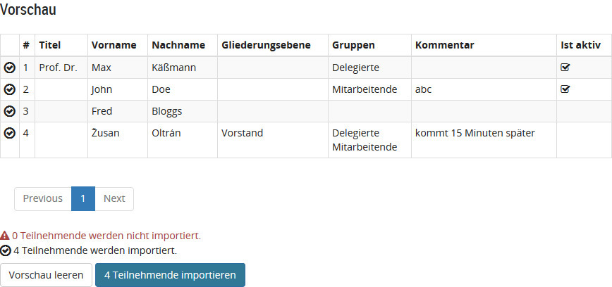
und kann die CSV-Datei noch ändern, falls es Fehler gibt. Zum Import drückt man auf den blauen Knopf x Teilnehmende importieren.
Der Benutzername, mit dem sich ein importierter Teilnehmer bei OpenSlides einloggt, ist immer Vorname Nachnahme (z. B. Žusan Oltrán). Gibt es mehrere Personen mit exakt dem gleichen Namen, hat eine davon den Zusatz ’ 1’ (z. B. Žusan Oltrán 1).
CSV-Dateien lassen sich übrigens recht einfach mit gängigen Tabellenkalkulationsprogrammen wie LibreOffice oder Excel erstellen. Dazu erstellt man einfach eine Tabelle in dieser Form:\begin_inset Separator latexpar\end_inset
| title | first_name | last_name | structure_level | groups | comment | is_active |
| John | Doe | 4 | abc | 1 | ||
und speichert sie als CSV-Datei mit der Kodierung UTF-8 und dem Komma als Trennzeichen. Es können so bestehende Mitgliedslisten für OpenSlides aufbereitet werden.
4.5.3 Teilnehmerliste
Alle Teilnehmer werden in der Teilnehmerliste aufgeführt. Die Liste kann durchsucht werden und man kann sie so modifizieren, dass durch Klicken auf 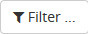
nur Teilnehmer bestimmter Gruppen oder nur anwesende Teilnehmer angezeigt werden. Durch Klicken auf eine Spaltenüberschrift wird die Liste entsprechend sortiert. In der Spalte Anwesend kann jederzeit die Anwesenheit eingestellt werden.
Durch das Klicken auf den Namen eines Teilnehmers, werden dessen Daten angezeigt. Durch Klicken unterhalb des Namens kann man den Teilnehmer bearbeiten oder löschen. Für das Bearbeiten erscheint dieselbe Eingabemaske wie beim manuellen Anlegen.
Durch Klicken auf 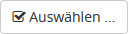
können mehrere Teilnehmer ausgewählt und für diese eine bestimmte Operation durchgeführt werden.
Die Teilnehmerliste kann auch als PDF ausgedruckt werden, wenn man auf das Symbol
und dann auf
klickt.
4.5.4 Passwort und Zugangsdaten
Beim Anlegen eines Teilnehmers wird automatisch ein zufälliges Erst-Passwort gesetzt, falls man nicht manuell ein Passwort angibt. Die Erst-Passwörter aller Teilnehmer sind in einer Datei hinterlegt, die durch Klick auf das Symbol
und dann auf Zugangsdatenliste angezeigt wird. Dieses PDF ist so ausgelegt, dass man es ausdrucken und so jedem Teilnehmer seine Zugangsdaten mitteilen kann. Der Inhalt des PDFs kann über die Teilnehmereinstellungen geändert werden, siehe 4.5.6↓.
Das Erst-Passwort sollte von jedem Teilnehmer schnellstmöglich geändert werden.
Administratoren haben die Möglichkeit das Passwort jedes Teilnehmers manuell neu zu setzen, indem sie die Benutzerdaten bearbeiten.
Achtung: Beim Ändern des Passworts muss es zuerst geändert werden und an schließend auf Reset gedrückt gerden. Das ist wichtig, denn ansonsten wird das neue Passwort nicht in die Datenbank eingetragen, obwohl es im PDF mit den Zugangsdaten auftaucht.
4.5.5 Gruppen
Über die Zugehörigkeit zu einer Gruppe wird festgelegt, was ein Teilnehmer bei der Veranstaltung und in OpenSlides darf. Klick man auf
, wird eine Liste mit allen aktuell existierenden Gruppen angezeigt.
Klickt man auf den Namen einer Gruppe, werden deren Berechtigungen angezeigt. Um die Gruppeneigenschaften zu ändern, klickt man auf
. Die aktuellen Berechtigungen sind blau unterlegt. Um eine Berechtigung hinzuzufügen, hält man die Strg-Taste gedrückt und klickt dann auf die entsprechende Berechtigung. Hält man die Strg-Taste gedrückt und klickt auf eine bereits ausgewählte Berechtigung, wird diese abgewählt.
Achtung!: Beim Ändern der Berechtigungen muss die Strg-Taste immer gedrückt gehalten sein, da sonst alle anderen Berechtigungen automatisch abgewählt werden. [D] [D] Dies ist OpenSlides bug #2120. A↓ listet die Voreinstellungen der Gruppen auf.
Eine neue Gruppe kann durch Klicken auf
erstellt werden.
Die Gruppen Gäste und Registrierte Nutzer werden automatisch zugewiesen. Alle angemeldeten Teilnehmer gehören zur Gruppe Registrierte Nutzer, alle unangemeldeten und damit anonymen Teilnehmer gehören zur Gruppe Gäste.
Unangemeldete Teilnehmer können die Veranstaltung nur sehen, wenn im Menü Einstellungen\SpecialChar menuseparatorAllgemein\SpecialChar menuseparatorSystem die Option Erlaube Zugriff für anonyme Gast-Nutzer aktiviert ist.
4.5.6 Einstellungen
Im Menü Einstellungen\SpecialChar menuseparatorBenutzer können Einstellungen für die Benutzerverwaltung vorgenommen werden.
Rubrik Sortierung
Mit der Option Benutzer nach Vornamen sortieren werden die Teilnehmer in der Teilnehmerliste nach Vornamen statt nach Nachnamen sortiert.
Rubrik PDF
Im Feld Titel für das Zugangsdaten- und Begrüßungs-PDF wird der Titel eingegeben, der im PDF der Zugangsdaten erscheint, das man an die Teilnehmer austeilen kann. Mehr dazu siehe 4.5.4↑.
Im Feld Hilfetext für das Zugangsdaten- und Willkommens-PDF wird der Text eingegeben, der im PDF der Zugangsdaten erscheint.
Im Feld System URL wird die URL angegeben, auf der sich die Teilnehmer einloggen können. Dort läuft der OpenSlides Server.
Im Feld WLAN-Name (SSID) kann der Name eines WLANs angegeben werden.
Im Feld WLAN-Passwort kann das Passwort für das WLAN angegeben werden.
Im Feld WLAN-Verschlüsselung kann die Verschlüsselung des WLANs angegeben werden.
Die Angaben für das WLAN und die System URL erscheinen im PDF der Zugangsdaten und werden auch im QR-Code in diesem PDF berücksichtigt.
4.6 Anträge
4.6.1 Manuelles Erstellen von Anträgen
Um einen neuen Antrag zu erstellen, klickt man im Menü Anträge oben auf
. In der erscheinenden Eingabemaske wird der Antragsteller, der Titel des Antrags, der Antragstext und die Begründung eingetragen.
Wird die Option Als Tagesordnungspunkt anzeigen ausgewählt, erscheint die Wahl als Tagesordnungspunkt. Ansonsten erscheint die Wahl in der Tagesordnungsübersicht als eigene Folie. Siehe 4.4.2↑ für mehr zu eigenen Folien. Mit der Option Erweiterte Felder anzeigen kann außerdem ein Sachgebiet, [E] [E] Siehe 4.6.4.2↓ für Infos zu Sachgebieten. Schlagwörter, [F] [F] Siehe 4.6.4.3↓ für Infos zu Schlagwörtern. die Unterstützer und der Arbeitsablauf [G] [G] Siehe 4.6.5↓ für Infos zu Arbeitsabläufen. angegeben werden.
Klickt man oben auf
, wird ein PDF mit der Übersicht aller angelegten Anträge generiert. Den Titel und Inhalt des PDFs kann man über die Einstellungen festlegen, siehe 4.6.9↓. Es erscheint im PDF zuerst die Liste aller Sachgebiete, dann die Liste der Anträge und schlussendlich jeder Antrag komplett mit Begründung. Die Anträge können so auch ausgedruckt und verteilt werden.
4.6.2 Automatisiertes Erstellen von Anträgen
Anträge können automatisiert aus einer Liste importiert werden. Dazu muss eine CSV-Datei erstellt werden. Dies ist eine Textdatei (die üblicherweise die Endung .csv oder seltener .txt hat). Ihre erste Zeile muss aus dieser Zeile bestehen:
identifier,title,text,reason,submitter,category
Es folgen dann je eine Zeile für jeden Antrag. Ein Eintrag für einen Antrag wäre z. B.:
Kat A-1,Satzungsänderung,"Die Mitgliederversammlung möge beschließen, in §8 Absatz 1 der Vereinssatzung die Zahl fünf durch sieben zu ersetzen.",Die vielen Aufgaben erfordern eine Erweiterung des Beirates auf sieben Mitglieder.,Dr. Hans Schulze,Kategorie A
Jedes Komma trennt die Eigenschaften voneinander. Gibt es eine Eigenschaft nicht, folgen die Kommas direkt aufeinander. Es muss jedoch mindestens der Titel und Text angegeben werden. Enthält eine Eigenschaft ein Komma, muss die Eigenschaft in doppelte Anführungszeichen gesetzt werden. Dies wurde in obigem Beispiel für den Antragstext gemacht. Beim Antragsteller ist es wichtig, dass er mit seinem Titel angegeben wird. In obigem Beisiel ist der Benutzername bei OpenSlides zwar „Hans Schulze“, hier muss er aber als „Dr. Hans Schulze“ angegeben werden, wenn er mit diesem Titel in OpenSlides angelegt ist.
Zum Importieren klickt man oben rechts auf
. Dort stellt man in der Rubrik Import von CSV-Datei die Kodierung auf UTF-8. Das stellt sicher, dass Namen mit Akzenten, Umlauten usw. korrekt importiert werden. Dazu muss die CSV-Datei auch mit der Kodierung UTF-8 gespeichert worden sein. (Dafür reicht es bei den meisten Editor-Programmen aus, dass man Unicode für die Kodierung einstellt, falls das nicht schon automatisch die Voreinstellung ist.) Nun klickt man auf den Knopf Durchsuchen und wählt eine CSV-Datei aus. Nach wenigen Sekunden sieht man in der Vorschau was importiert werden wird: [H] [H] Den Inhalt der CSV-Datei, die für dieses Bildschirmfoto verwendet wurde, ist in B.2↓ zu finden.\begin_inset Separator latexpar\end_inset

und kann die CSV-Datei noch ändern, falls es Fehler gibt. Wie man sieht, werden noch nicht existierende Kategorien und Antragsteller beim Importieren automatisch angelegt. Zum Import drückt man auf den blauen Knopf x Anträge importieren.
Gibt es bereits einen Antrag mit demselben Bezeichner, wird der Antrag nicht importiert. Gibt es einen Antrag mit demselben Titel bereits, wird dieser importiert, da der Antragsteller das nicht wissen kann. Man muss diesem Antrag dann manuell einen geeigneten Titel geben.
CSV-Dateien lassen sich übrigens recht einfach mit gängigen Tabellenkalkulationsprogrammen wie LibreOffice oder Excel erstellen. Dazu erstellt man einfach eine Tabelle in dieser Form:\begin_inset Separator latexpar\end_inset
| \strikeout off\uuline off\uwave offidentifier | \strikeout off\uuline off\uwave offtitle | \strikeout off\uuline off\uwave offtext | \strikeout off\uuline off\uwave offreason | \strikeout off\uuline off\uwave offsubmitter | \strikeout off\uuline off\uwave offcategory |
| \strikeout off\uuline off\uwave offKat A-1 | \strikeout off\uuline off\uwave offSat\SpecialChar softhyphenzungs\SpecialChar softhyphenände\SpecialChar softhyphenrung | \strikeout off\uuline off\uwave offDie Mitgliederversammlung möge beschließen, in §8 Absatz 1 der Vereinssatzung die Zahl fünf durch sieben zu ersetzen. | \strikeout off\uuline off\uwave offDie vielen Aufgaben erfordern eine Erweiterung des Beirates auf sieben Mitglieder. | \strikeout off\uuline off\uwave offDr. Hans Schulze | \strikeout off\uuline off\uwave offKate\SpecialChar softhyphengorie A |
und speichert sie als CSV-Datei mit der Kodierung UTF-8 und dem Komma als Trennzeichen. Es können so bestehende Mitgliedslisten für OpenSlides aufbereitet werden.
4.6.3 Bearbeiten von Anträgen
Der Inhalt von Anträgen kann jederzeit geändert werden, insbesondere während der Veranstaltung. Dazu zeigt man mit der Maus auf einen Antrag und es erscheint ein Kontextmenü:\begin_inset Separator latexpar\end_inset

Klickt man dort auf Bearbeiten, kann man den Antrag bearbeiten. Als Alternative für das Bearbeiten kann man im Kontextmenü auf Quick-Edit klicken und so oft benötigte Dinge ändern:\begin_inset Separator latexpar\end_inset
Bei Anträgen mit komplexem Arbeitsablauf, [I] [I] Siehe 4.6.5.2↓ wird bei jeder Änderung des Antrags eine neue Version angelegt, so dass die Änderungen direkt miteinander verglichen werden können. Für mehr zur Versionierung siehe 4.6.6↓.
4.6.4 Strukturierung von Anträgen
Um bei OpenSlides die eingetragenen Anträge zu strukturieren, kann man die Einordnung in Sachgebiete, die automatische Nummerierung und Schlagwörter nutzen.
4.6.4.1 Nummerierung
OpenSlides nummeriert alle Anträge automatisch, je nachdem welche Voreinstellungen man vorgenommen hat, siehe 4.6.9↓. Beim komplexen Arbeitsablauf erfolgt die Nummerierung erst, wenn der Antrag „zugelassen“, „zurückgezogen“ oder „verworfen“ wurde. Man kann die Nummer beziehungsweise den Bezeichner nachträglich ändern, indem man den Antrag bearbeitet.
4.6.4.2 Sachgebiete
Klickt man im Menü Anträge oben auf
, kann man bestehende Sachgebiete bearbeiten oder mit
neue erstellen. Zum Bearbeiten fährt man mit der Maus über den Sachgebietstitel und klickt dann auf das erscheinende Menü.
Beim Erstellen gibt man in das Feld Präfix einen Präfix ein, der verwendet wird, wenn in den Einstellungen die Nummerierung pro Sachgebiet eingestellt ist, siehe 4.6.9↓.
Wird einem Antrag nachträglich ein anderes Sachgebiet zugewiesen, wird dessen Nummerierung nicht automatisch verändert um Missverständnisse zu vermeiden. Die Nummerierung kann aber manuell angepasst werden, wenn das notwendig ist.
4.6.4.3 Schlagwörter
Klickt man im Menü Anträge oben auf
, kann man bestehende Schlagwörter bearbeiten oder mit
neue erstellen. Zum Bearbeiten fährt man mit der Maus über den Schlagworttitel und klickt dann auf das erscheinende Menü.
Gibt man in einem Suchfeld von OpenSlides den Namen eines Schlagworts ein, erscheinen alle damit verknüpften Anträge. In der Antragsliste erscheint das oder die Schlagwörter hinter dem Titel. In diesem Beispiel wurde das Schlagwort „Soziales“ verknüpft:
4.6.5 Arbeitsablauf und Status
OpenSlides bietet zwei Arbeitsabläufe mit verschiedenen Status, in denen sich ein Antrag befinden kann:
Einfacher Arbeitsablauf Dabei kann bei der Verwaltung eines eingereichten Antrags zwischen den Status „angenommen“, „abgelehnt“ und „nicht entschieden“ gewählt werden.
Komplexer Arbeitsablauf Dabei ist der Antrag zunächst im Status „veröffentlicht“ und es besteht die Option, den Antrag „zuzulassen“, „zurückzuziehen“ oder als nicht zulässig zu „verwerfen“. Ist der Antrag „zugelassen“, kann danach gewählt werden, ob der Antrag „angenommen“, „abgelehnt“, „zurückgezogen“, „vertagt“, „nicht befasst“, „in einen Ausschuss verwiesen“ wird oder er ein „Review benötigt“.
Der Status eines Antrags kann geändert werden, indem man in der Antragsliste auf den Titels eines Antrags klickt und dann auf
.
In bestimmten Status können die Antragsteller den Antrag noch selbst bearbeiten, in anderen ist dies gesperrt. Ebenso kann der Administrator in bestimmten Status eine Abstimmung ausrufen, siehe 4.6.8↓, in anderen nicht. Ist das Unterstützersystem in den Einstellungen aktiviert, siehe 4.6.9↓, können Teilnehmer einen Antrag nur im jeweiligen Anfangsstatus unterstützen.
Es folgt eine Übersicht über die beiden Arbeitsabläufe mit allen Status:
4.6.5.1 Einfacher Arbeitsablauf
Table 4.1 Berechtigungen beim einfachen Arbeitsablauf.
| Status | Eingereicht | Ange\SpecialChar softhyphennommen | Abgelehnt | Nicht entschieden |
| Antragsteller darf bearbeiten | Ja | Nein | Nein | Nein |
| Unterstützung möglich | Ja | Nein | Nein | Nein |
| Abstimmung möglich | Ja | Nein | Nein | Nein |
| Automatische Versionierung | Nein | Nein | Nein | Nein |
| Automatischer Bezeichner | Ja | Ja | Ja | Ja |
4.6.5.2 Komplexer Arbeitsablauf
Table 4.2 Berechtigungen beim komplexen Arbeitsablauf.
| Status | Veröffentlicht | Zugelassen | Alle anderen |
| Antragsteller darf bearbeiten | Ja | Ja | Nein |
| Unterstützung möglich | Ja | Nein | Nein |
| Abstimmung möglich | Nein | Ja | Nein |
| Automatische Versionierung | Nein | Ja | Ja |
| Neue Version wird automatisch zugelassen | - | Nein | Ja |
| Automatischer Bezeichner | Nein | Ja | Ja |
4.6.5.3 Experteneinstellung
Es kann eingestellt werden, dass ein Antrag in einem bestimmten Status nur für bestimmte Benutzer sichtbar ist. Die Anpassung kann vor dem ersten Anlegen der Datenbank in der Datei OpenSlides/motion/signals.py in der Funktion
create_builtin_workflows()
erfolgen: Dazu beim gewünschten Status beispielsweise die Zeile
required_permission_to_see=’motion.can_manage_motion’,
einfügen. Die Anpassung kann aber auch bei bestehender Datenbank erfolgen: Dazu mit einem entsprechenden Tool direkt auf die Datenbank zugreifen und beim gewünschten Status das Feld required_permission_to_see beispielsweise mit der Zeichenkette motion.can_manage_motion überschreiben.
4.6.6 Versionierung
OpenSlides versioniert Ihre Anträge, wenn sich der Antrag im komplexen Arbeitsablauf und nicht mehr im Status „veröffentlicht“ befindet. Jedes Mal, wenn der Antrag bearbeitet wird, legt OpenSlides eine neue Antragsversion an. Sie können auf der Antragsseite mehrere Versionen miteinander vergleichen. Wählen Sie dazu je einen Knopf links und rechts aus und klicken Sie auf den Button „Unterschied“.
Nur eine der Versionen eines Antrags gilt in OpenSlides als zugelassene Version. Diese wird auf dem Projektor angezeigt und in der Antragsseite mit einem grünen Haken markiert. Klicken Sie auf einen grauen Haken-Button, um eine andere Version zuzulassen. Hierbei müssen Sie den entsprechenden Dialog mit „Ja“ bestätigen.
Wenn Sie (bei entsprechender Voreinstellung, siehe 4.6.9↓) einen Antrag bearbeiten, haben Sie mit dem Haken „Keine neue Version erzeugen“ die Möglichkeit, die ansonsten erfolgende Versionierung im Einzelfall ausnahmsweise zu umgehen. Dies kann sinnvoll sein, wenn Sie einen Antrag nur redaktionell (trivial) ändern wollen.
Im einfachen Arbeitsablauf ist das Versionierungssystem deaktiviert.
4.6.7 Projizierung
Um einen Antrag anzuzeigen, klicken Sie entweder auf dem Dashboard im Widget „Anträge“ auf den Projektor-Button
vor dem Antrag oder auf der Seite eines Antrags auf den Projektor-Button in der oberen Zeile rechts.
Zu jedem Antrag können Sie über einen Link („Neuer Tagesordnungseintrag“) in der oberen Leiste des betreffenden Antrags („Mehr Aktionen“) auch einen eigenen Eintrag in der Tagesordnung erstellen, der direkt mit der Antragsfolie verknüpft ist. Dies empfiehlt sich, wenn ein einzelner Antrag an einer bestimmten Stelle der Tagesordnung behandelt werden und dazu eine Redeliste verwendet soll.
4.6.8 Abstimmungen
Ruft der Versammlungsleiter eine Abstimmung über einen Antrag aus, können Sie diese mit dem Button „Neue Abstimmung“ auf der betreffenden Antragsseite (im Kasten rechts) in OpenSlides aufnehmen. Tragen Sie die entsprechenden Abstimmungsergebnisse in die Tabelle ein. Wenn Sie -1 eintragen, wird das Wort „Mehrheit“ ausgegeben. -2 steht für „Nicht erfasst“. Sollten Sie bei den abgegebenen Stimmen einen Wert eintragen, berechnet OpenSlides automatisch die prozentualen Anteile der übrigen Stimmzahlen. Klicken Sie am Ende auf Speichern oder Übernehmen.
In der Abstimmungsansicht können Sie außerdem eventuell benötigte Abstimmungszettel als PDF
abrufen. Nachträglich können Sie Abstimmungsergebnisse eingeben oder korrigieren, indem Sie auf der Antragsseite neben der Abstimmung auf den Bearbeiten-Button
klicken.
4.6.9 Einstellungen
Im Menü Einstellungen\SpecialChar menuseparatorAnträge können Einstellungen für die Antragsverwaltung vorgenommen werden.
Rubrik Allgemein
Im Feld Arbeitsablauf von neuen Anträgen kann man wählen zwischen
Simple Workflow Dieser Arbeitsablauf bietet keine Versionierung und nur die Status Annehmen/Ablehnen/Nicht entscheiden. Für mehr zu Arbeitsabläufen siehe siehe 4.6.5↑.
Complex Workflow Dieser Arbeitsablauf bietet mehrere Status, bei denen zum Teil die automatische Versionierung aktiviert ist. Siehe 4.6.6↑ für mehr zur Versionierung.
Im Feld Bezeichner kann man festlegen wie Anträge bezeichnet werden:
pro Sachgebiet nummerieren nur auf gültigen Stimmen beruht.
fortlaufend nummerieren jeder neu angelegte Antrag wird fortlaufen nummeriert
manuell setzen es wird kein automatischer Bezeichner gesetzt
Im Feld Antragseinleitung kann ein Text als voreingestellte Einleitung für Anträge eingestellt werden.
Mit der Option Einreichen von neuen Anträgen stoppen für Nutzer ohne Verwaltungsrechte kann Teilnehmern, die nicht in der Gruppe Mitarbeitende sind, das Recht auf das Anlagen neuer Anträge genommen werden. Siehe 4.5.5↑ für Teilnehmergruppen. Dies ist sinnvoll, wenn der Antragsschluss bereits verstrichen ist oder die Versammlungsleitung einen Antragsschluss verkündet.
Mit der Option Erlaubt Versionierung zu deaktivieren wird es ermöglicht, beim Ändern von Anträgen die automatische Versionierung im Einzelfall zu deaktivieren. Dies kann sinnvoll sein, wenn Anträge nur redaktionell geändert werden, aber ansonsten die Versionierung aktiv bleiben soll. Siehe 4.6.6↑ für mehr zur Versionierung.
Rubrik Unterstützer/innen
Im Feld Mindestanzahl erforderlicher Unterstützer/innen für einen Antrag kann festgelegt werden, wie viele Personen einen Antrag unterstützen müssen, damit er zur Abstimmung zugelassen wird. Wird ’0’ eingetragen, wird das Unterstützersystem deaktiviert.
Mit der Option Entferne alle Unterstützer eines Antrags, wenn ein Antragsteller seinen Antrag im Anfangsstadium bearbeitet werden alle Unterstützer von Antrag entfernt, wenn er bearbeitet wird. Der Grund ist, dass bisherige Unterstützer eine geänderte Fassung nicht automatisch auch unterstützen. Durch diese Option wird sichergestellt, dass sie auch die geänderte Fassung explizit unterstützen.
Rubrik Abstimmung und Stimmzettel
Im Feld Die 100%-Basis eines Wahlergebnisses besteht aus kann man wählen, ob die prozentuale Berechnung des Wahlergebnisses
Nur gültige Stimmen nur auf gültigen Stimmen beruht.
Alle abgegebenen Stimmen auf allen abgegebenen Stimmen beruht.
Deaktiviert deaktiviert ist. Es werden dann nur die Anzahlen der Stimmen als Ergebnis einer Wahl projiziert.
Im Feld Anzahl der Stimmzettel (Vorauswahl) kann die Anzahl der Stimmzettel eingestellt werden, die OpenSlides als PDF erstellt:
Anzahl aller Delegierten es werden so viele Stimmzettel erstellt, wie es in OpenSlides eingerichtete Teilnehmer gibt, die in der Gruppe Delegierte sind. Siehe 4.5.5↑ für Teilnehmergruppen.
Anzahl aller Teilnehmer/innen es werden so viele Stimmzettel erstellt, wie es in OpenSlides eingerichtete Teilnehmer gibt.
Verwende die folgende benutzerdefinierte Anzahl Es werden so viele Stimmzettel erstellt wie im Feld Benutzerdefinierte Anzahl von Stimmzetteln angegeben ist.
Im Feld Benutzerdefinierte Anzahl von Stimmzetteln wird die Anzahl der zu erstellenden Stimmzettel angegeben.
Rubrik PDF
Im Feld Titel für PDF-Dokument (alle Anträge) wird der Titel eingegeben, der im PDF mit der Übersicht aller Anträge erscheint.
Im Feld Einleitungstext für PDF-Dokument (alle Anträge) wird der Text eingegeben, der im PDF mit der Übersicht aller Anträge erscheint.
Mit der Option Absatznummerierung anzeigen (nur im PDF) können die Absätze im PDF für den Antrag nummeriert werden.
4.7 Wahlen
4.7.1 Anlegen von Wahlen
Eine neue Wahl wird angelegt, indem man oben auf
klickt. In der erscheinenden Eingabemaske wird der Titel der Wahl, eine optionale Beschreibung, die Anzahl der zu wählenden Posten und ein optionaler Hinweis für den Stimmzettel eingegeben. Mit dem Hinweis kann z. B. der Wahlmodus erklärt werden.
Wird die Option Als Tagesordnungspunkt anzeigen ausgewählt, erscheint die Wahl als Tagesordnungspunkt. Ansonsten erscheint die Wahl in der Tagesordnungsübersicht als eigene Folie. Siehe 4.4.2↑ für mehr zu eigenen Folien.
Klickt man oben auf
, wird ein PDF mit der Übersicht aller angelegten Wahlen generiert. Den Titel und Inhalt des PDFs kann man über die Einstellungen festlegen, siehe 4.7.3↓.
4.7.2 Durchführung einer Wahl
Klickt man in der Wahlübersicht auf
vor der entsprechenden Wahl, wird diese projiziert. Zur Durchführung einer Wahl klickt man in der Übersicht auf deren Namen.
In der Rubrik Kandidaten/innen kann man sich mit
selbst auf die Kandidatenliste setzen. Administratoren können zusätzlich alle bei OpenSlides angelegten Teilnehmer auf die Liste setzen. Um in der Auswahlliste schnell eine Person zu finden, gibt man dort die ersten Buchstaben des Namens der Person ein. Egal wie viele Kandidaten es bereits gibt, durch Klicken oben auf
, kann man einen Vorschlagszettel generieren. Er enthält alle bereits feststehenden Kandidaten und 7 leere Felder, so dass man das PDF ausdrucken und verteilen kann:
Steht die Kandidatenliste fest, kann man oben auf
klicken um eine Redeliste zu erstellen, damit sich die Kandidaten vorstellen können. Die Redeliste ist technisch identisch zu der Redeliste eines Tagesordnungspunkts, die in 4.4.5↑ beschrieben ist. Es sind automatisch bereits alle Kandidaten auf der Redeliste.
Um die Wahl zu beginnen, klickt man unten auf
. Dadurch hat sich die Phase der Wahl automatisch auf Im Wahlvorgang geändert.
. Dadurch hat sich die Phase der Wahl automatisch auf Im Wahlvorgang geändert.
Um Stimmzettel zu erstellen, klickt man auf
. Der Stimmzettel ist so ausgelegt, dass er ausgedruckt und verteilt werden kann.
. Der Stimmzettel ist so ausgelegt, dass er ausgedruckt und verteilt werden kann.
Die Ergebnisse der Wahl können eingegeben werden, indem man auf
klickt. Um Kandidaten als gewählt zu markieren, klickt man auf das Symbol
vor deren Namen. Um die Wahl zu veröffentlichen, klickt man auf
. Im Projektor wird nun erst einmal nur die Kandidatenliste angezeigt, in der die gewählten Kandidaten mit einem Stern markiert sind. Um auch die Stimmenanzahl zu veröffentlichen, klickt man auf
.
klickt. Um Kandidaten als gewählt zu markieren, klickt man auf das Symbol
vor deren Namen. Um die Wahl zu veröffentlichen, klickt man auf
. Im Projektor wird nun erst einmal nur die Kandidatenliste angezeigt, in der die gewählten Kandidaten mit einem Stern markiert sind. Um auch die Stimmenanzahl zu veröffentlichen, klickt man auf
.
Falls weitere Wahlgänge nötig sind, kann man auf
klicken, um einen weiteren zu beginnen. Ist die Wahl abgeschlossen ändert man oben Phase auf Abgeschlossen. Wenn man in einer abgeschlossenen Wahl oben auf
klickt, erhält man ein PDF mit dem Wahlergebnis, das man für die Nachbereitung der Veranstaltung verwenden kann. Mehr dazu siehe 4.9↓.
klicken, um einen weiteren zu beginnen. Ist die Wahl abgeschlossen ändert man oben Phase auf Abgeschlossen. Wenn man in einer abgeschlossenen Wahl oben auf
klickt, erhält man ein PDF mit dem Wahlergebnis, das man für die Nachbereitung der Veranstaltung verwenden kann. Mehr dazu siehe 4.9↓.
4.7.3 Einstellungen
Im Menü Einstellungen\SpecialChar menuseparatorWahlen können Einstellungen für die Benutzerverwaltung vorgenommen werden.
Rubrik Wahlgang und Stimmzettel
Im Feld Wahlmethode kann man wählen zwischen
Automatische Zuordnung der Methode Dabei wird der Stimmzettel automatisch für eine Stimme pro Kandidat ausgelegt, wenn es mehr Kandidaten als Posten gibt. Ansonsten wird Ja\SpecialChar breakableslashNein\SpecialChar breakableslashEnthaltung auf den Stimmzettel geschrieben.
Eine Stimme pro Kandidat/in Der Stimmzettel wird immer für eine Stimme pro Kandidat ausgelegt.
Ja, Nein, Enthaltung pro Kandidat/in Der Stimmzettel wird immer für Ja\SpecialChar breakableslashNein\SpecialChar breakableslashEnthaltung pro Kandidat ausgelegt.
Im Feld Die 100%-Basis eines Wahlergebnisses besteht aus kann man wählen, ob die prozentuale Berechnung des Wahlergebnisses
Nur gültige Stimmen nur auf gültigen Stimmen beruht.
Alle abgegebenen Stimmen auf allen abgegebenen Stimmen beruht.
Deaktiviert deaktiviert ist. Es werden dann nur die Anzahlen der Stimmen als Ergebnis einer Wahl projiziert.
Im Feld Anzahl der Stimmzettel (Vorauswahl) kann die Anzahl der Stimmzettel eingestellt werden, die OpenSlides als PDF erstellt:
Anzahl aller Delegierten es werden so viele Stimmzettel erstellt, wie es in OpenSlides eingerichtete Teilnehmer gibt, die in der Gruppe Delegierte sind. Siehe 4.5.5↑ für Teilnehmergruppen.
Anzahl aller Teilnehmer/innen es werden so viele Stimmzettel erstellt, wie es in OpenSlides eingerichtete Teilnehmer gibt.
Verwende die folgende benutzerdefinierte Anzahl Es werden so viele Stimmzettel erstellt wie im Feld Benutzerdefinierte Anzahl von Stimmzetteln angegeben ist.
Im Feld Benutzerdefinierte Anzahl von Stimmzetteln wird die Anzahl der zu erstellenden Stimmzettel angegeben.
Die Option Wahlergebnisse nur für gewählte Kandidaten veröffentlichen (Projektoransicht) hat derzeit keinen Effekt.
Rubrik PDF
Im Feld Titel für PDF-Dokument (alle Wahlen) wird der Titel eingegeben, der im PDF mit der Übersicht aller Wahlen erscheint.
Im Feld Einleitungstext für PDF-Dokument (alle Wahlen) wird der Text eingegeben, der im PDF mit der Übersicht aller Wahlen erscheint.
4.8 Dateien
4.8.1 Hochladen von Dateien
Wechseln Sie zum Menüpunkt Dateien und klicken Sie oben rechts auf
.
Laden Sie eine Datei hoch, indem Sie mit Durchsuchen die Datei aus dem Dateisystem ihres Computers auswählen. Außerdem können Sie noch einen ergänzenden Titel angeben, sowie die Person, die die Datei hochlädt. Wird keine Person angegeben, wird automatisch der aktuell eingeloggte Benutzer eingetragen.
Die Datei ist nun auf den Server geladen und unter ihrem Namen auf der Übersichtsseite des Menüpunkts Dateien verlinkt.
4.8.2 Dateien auf dem Projektor anzeigen
PDF-Dateien können direkt projiziert werden, wenn sie auf das Symbol
vor der Datei klicken.
Bilddateien können über oder in einem Tagesordnungspunkt angezeigt werden. Wechseln Sie zum Menüpunkt Tagesordnung und klicken Sie auf
. Klicken Sie dort in der Rubrik Text auf das Symbol  . Es öffnet sich ein Dialog, indem alle Bilddateien unter Image list aufgelistet sind. Wählen Sie das entsprechende Bild aus. Wenn nur das Bild angezeigt werden soll, deaktivieren Sie die Option Als Tagesordnungspunkt anzeigen.
. Es öffnet sich ein Dialog, indem alle Bilddateien unter Image list aufgelistet sind. Wählen Sie das entsprechende Bild aus. Wenn nur das Bild angezeigt werden soll, deaktivieren Sie die Option Als Tagesordnungspunkt anzeigen.
. Es öffnet sich ein Dialog, indem alle Bilddateien unter Image list aufgelistet sind. Wählen Sie das entsprechende Bild aus. Wenn nur das Bild angezeigt werden soll, deaktivieren Sie die Option Als Tagesordnungspunkt anzeigen.
4.9 Nachbereitung
Für die Nachbereitung einer Veranstaltung bietet OpenSlides verschiedene Hilfsmittel an. Es gibt die Möglichkeit
- die Tagesordnung als PDF auszugeben, siehe 4.4.6↑.
- die Teilnehmerliste als PDF auszugeben, siehe 4.5.3↑.
- alle Anträge mit Begründungen als PDF auszugeben, siehe 4.6.1↑.
- alle Wahlen mit den Wahlergebnissen als PDF auszugeben, siehe 4.7.1↑.
- eine Liste mit allen Reden, den Rednern und der tatsächlichen Redezeit als CSV auszugeben. Dazu ist das Plugin CSV Export Plugin for OpenSlides erforderlich, das im Folgenden beschrieben ist.
4.9.1 Das Plugin CSV Export Plugin for OpenSlides
Das Plugin kann von der Projektseite:
https://github.com/OpenSlides/openslides-csv-export/
heruntergeladen werden:
https://github.com/OpenSlides/openslides-csv-export/archive/master.zip
https://github.com/OpenSlides/openslides-csv-export/
heruntergeladen werden:
https://github.com/OpenSlides/openslides-csv-export/archive/master.zip
Um es zu installieren, entpackt man die ZIP-Datei in einen beliebigen Ordner. dadurch wird dort ein Ordner namens openslides-csv-export-master angelegt. Darin befindet sich der Unterordner openslides_csv_export, den man komplett in den Unterordner
~\openslides\plugins
des Verzeichnisses, in dem OpenSlides installiert ist, kopiert. Falls OpenSlides läuft, muss es geschlossen und der Server neu gestartet werden, wie es in 2.3↑ beschrieben ist.
~\openslides\plugins
des Verzeichnisses, in dem OpenSlides installiert ist, kopiert. Falls OpenSlides läuft, muss es geschlossen und der Server neu gestartet werden, wie es in 2.3↑ beschrieben ist.
In der Menüleiste von OpenSlides erscheint nach der Installation das neue Icon
.
Klickt man darauf, wird eine Liste aller Reden, den Rednern und der tatsächlich geredeten Zeit in eine CSV-Datei exportiert. CSV-Dateien können mit allen gängigen Tabellenkalkulationen wie z. B. LibreOffice Calc oder mit einem Texteditor geöffnet werden.
4.10 Einstellungen
Unter dem Menüpunkt Einstellungen finden sich verschiedene Einstellmöglichkeiten. Bei allen Einstellungen, die auch die Projektoransicht betreffen, zum Beispiel dem Titel der Veranstaltung, ist zu beachten, dass die Projektoransicht sich im Kopfbereich nicht automatisch aktualisiert. Man muss das Browserfenster der Projektoransicht an dem Computer, an dem der Projektor angeschlossen ist, manuell mit der Taste F5 aktualisieren.
4.10.1 Allgemein
Rubrik Veranstaltung
Im Feld Veranstaltungsname wird der Name der Veranstaltung angegeben. Er erscheint im Projektor links oben in der Kopfzeile.
Im Feld Kurzbeschreibung der Veranstaltung kann die Veranstaltung kurz beschrieben werden. Diese Beschreibung erscheint im Projektor in der Kopfzeile unter dem Veranstaltungsnamen.
Im Feld Veranstaltungszeitraum wird das Datum oder der Zeitraum der Veranstaltung angegeben. Dies erscheint im Projektor in der Fußzeile rechts.
Im Feld Veranstaltungsort wird der Ort angegeben. Er erscheint im Projektor in der Fußzeile rechts.
Im Feld Veranstalter wird der Veranstalter angegeben.
Im Feld Impressum wird das Impressum des Veranstalters angegeben. Dieses erscheint in der Fußzeile der Startseite. Weblinks müssen als HTML-Code eingegeben werden.
Im Feld Titel der Startseite wird der Titel für die Startseite eingegeben.
Im Feld Text der Startseite wird der Text für die Startseite eingegeben. Weblinks, Bilder, usw. müssen als HTML-Code eingegeben werden.
Rubrik System
Mit der Option Erlaube Zugriff für anonyme Gast-Nutzer ist es möglich, dass anonyme, unangemeldete Personen das OpenSlides der Veranstaltung sehen können. Um deren Berechtigungen einzustellen, muss die Gruppe Gäste bearbeitet werden, siehe 4.5.5↑ für Details.
Im Feld Diesen Text auf der Login-Seite anzeigen wird der Text eingetragen, der grün unterlegt auf dem Login-Fenster als Information erscheint.
4.10.2 Projektor
Mit den Einstellungen dieser Rubrik kann das Erscheinungsbild der Projektoransicht angepasst werden.
Mit der Option Logo auf dem Projektor anzeigen kann ein Logo oben links angezeigt werden. Um das Logo zu ändern, muss die Datei logo-projector.png im Unterordner
~\Lib\site-packages\openslides\core\static\img
des Verzeichnisses, in dem OpenSlides installiert ist, durch eine Datei gleichen Namens ersetzt werden.
~\Lib\site-packages\openslides\core\static\img
des Verzeichnisses, in dem OpenSlides installiert ist, durch eine Datei gleichen Namens ersetzt werden.
Mit der Option Titel und Kurzbeschreibung der Veranstaltung auf dem Projektor anzeigen kann der Titel und die Kurzbeschreibung der Veranstaltung rechts neben dem Logo angezeigt werden.
Im Feld Hintergrundfarbe des Projektor-Kopf- und Fußbereichs kann diese Farbe verändert werden.
Im Feld Hintergrundfarbe des Schriftfarbe des Projektor-Kopf- und Fußbereichs kann diese Farbe verändert werden.
Im Feld Hintergrundfarbe des Schriftfarbe der Projektor-Überschrift kann diese Farbe verändert werden.
Im Feld Voreingestellter Countdown kann die Anzahl an Sekunden für neue Countdowns voreingestellt werden. Mehr zu Countdowns siehe 4.3.1↑.
4.10.3 Tagesordnung
Die Einstellungen für die Tagesordnung sind in 4.4.7↑ erläutert.
4.10.4 Anträge
Die Einstellungen für Anträge sind in 4.6.9↑ erläutert.
4.10.5 Wahlen
Die Einstellungen für Wahlen sind in 4.7.3↑ erläutert.
4.10.6 Benutzer
Die Einstellungen für die Benutzer sind in 4.5.6↑ erläutert.
5 Weitere Anpassungen von OpenSlides
5.1 Eigenes Logo einfügen
Um das Logo zu ändern, muss die Datei logo-projector.png im Unterordner
~\Lib\site-packages\openslides\core\static\img
des Verzeichnisses, in dem OpenSlides installiert ist, durch eine Datei gleichen Namens ersetzt werden.
~\Lib\site-packages\openslides\core\static\img
des Verzeichnisses, in dem OpenSlides installiert ist, durch eine Datei gleichen Namens ersetzt werden.
5.2 Plugins
OpenSlides kann mit Hilfe von Plugins erweitert werden. Plugins dienen dazu bestimmte Funktionen hinzuzufügen, die standardmäßig nicht verfügbar sind. Ein Beispiel ist das in 4.9.1↑ beschriebene Plugin CSV Export Plugin for OpenSlides.
Plugins werden installiert, indem man den Dateiordner des Plugins komplett in den Unterordner
~\openslides\plugins
des Verzeichnisses, in dem OpenSlides installiert ist, kopiert. Falls OpenSlides läuft, muss es geschlossen und der Server neu gestartet werden, wie es in 2.3↑ beschrieben ist. In der Menüleiste von OpenSlides erscheint danach ein neues Icon des entsprechenden Plugins.
~\openslides\plugins
des Verzeichnisses, in dem OpenSlides installiert ist, kopiert. Falls OpenSlides läuft, muss es geschlossen und der Server neu gestartet werden, wie es in 2.3↑ beschrieben ist. In der Menüleiste von OpenSlides erscheint danach ein neues Icon des entsprechenden Plugins.
Wie man Plugins für OpenSlides programmiert, ist in ?? beschrieben.
5.3 Eigene Datenbank anbinden
Dieses Handbuch ist noch nicht fertiggestellt. Wenn Sie Interesse haben, uns zu unterstützen, schreiben Sie uns einfach eine E-Mail:
5.4 Eigenen Webserver einsetzen
5.5 Template anpassen
6 Sonstiges
Dieses Handbuch ist noch nicht fertiggestellt. Wenn Sie Interesse haben, uns zu unterstützen, schreiben Sie uns einfach eine E-Mail:
6.1 Datenschutz
A Voreinstellungen der Teilnehmer-Gruppen
B CSV-Beispieldateien
B.1 Beispiel für Teilnehmer CSV-Datei
Dies ist als Beispiel der Inhalt einer CSV-Datei für den Import von 4 Teilnehmern:
title,first_name,last_name,structure_level,groups,comment,is_active
Prof. Dr.,Max,Käßmann,,3,,1
,John,Doe,,4,abc,1
,Fred,Bloggs,,,,
,Žusan,Oltrán,Vorstand,"3,4",kommt 15 Minuten später,0
Prof. Dr.,Max,Käßmann,,3,,1
,John,Doe,,4,abc,1
,Fred,Bloggs,,,,
,Žusan,Oltrán,Vorstand,"3,4",kommt 15 Minuten später,0
B.2 Beispiel für Antrag CSV-Datei
Dies ist als Beispiel der Inhalt einer CSV-Datei für den Import von 3 Anträgen:
identifier,title,text,reason,submitter,category
Kat A-1,Satzungsänderung,"Die Mitgliederversammlung möge beschließen, in §8 Absatz 1 der Vereinssatzung die Zahl fünf durch sieben zu ersetzen.","Die vielen Aufgaben erfordern eine Erweiterung des Beirates auf sieben Mitglieder.",Dr. Hans Schulze,Kategorie A
B1,Titel 2,Text 2,Begründung 2,Antragsteller 2,Kategorie B
,Titel 3,Text 3,Begründung 3,,
Kat A-1,Satzungsänderung,"Die Mitgliederversammlung möge beschließen, in §8 Absatz 1 der Vereinssatzung die Zahl fünf durch sieben zu ersetzen.","Die vielen Aufgaben erfordern eine Erweiterung des Beirates auf sieben Mitglieder.",Dr. Hans Schulze,Kategorie A
B1,Titel 2,Text 2,Begründung 2,Antragsteller 2,Kategorie B
,Titel 3,Text 3,Begründung 3,,
C Impressum
Copyright 2012–2016
OpenSlides-Autorenteam:\begin_inset Separator latexpar\end_inset
-
- Norman Jäckel
- Anja Jäckel
- Emanuel Schütze
- Uwe Stöhr
Das OpenSlides-Handbuch ist unter der Creative Commons CC BY-SA 3.0 lizensiert.